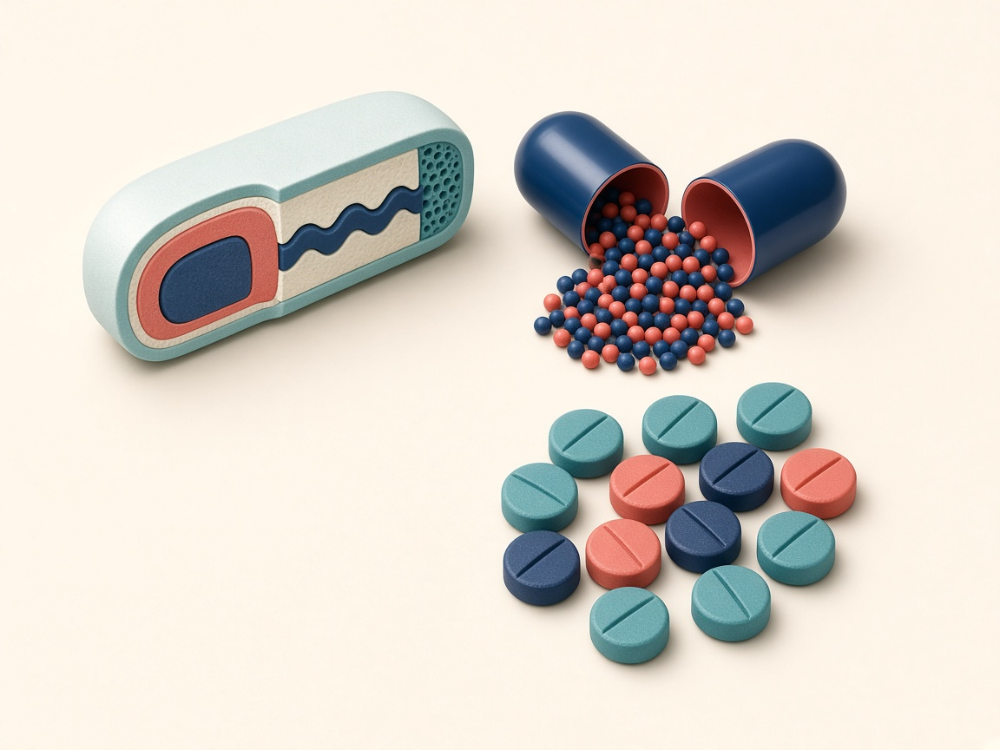
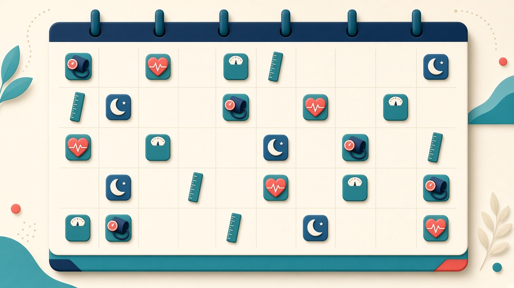
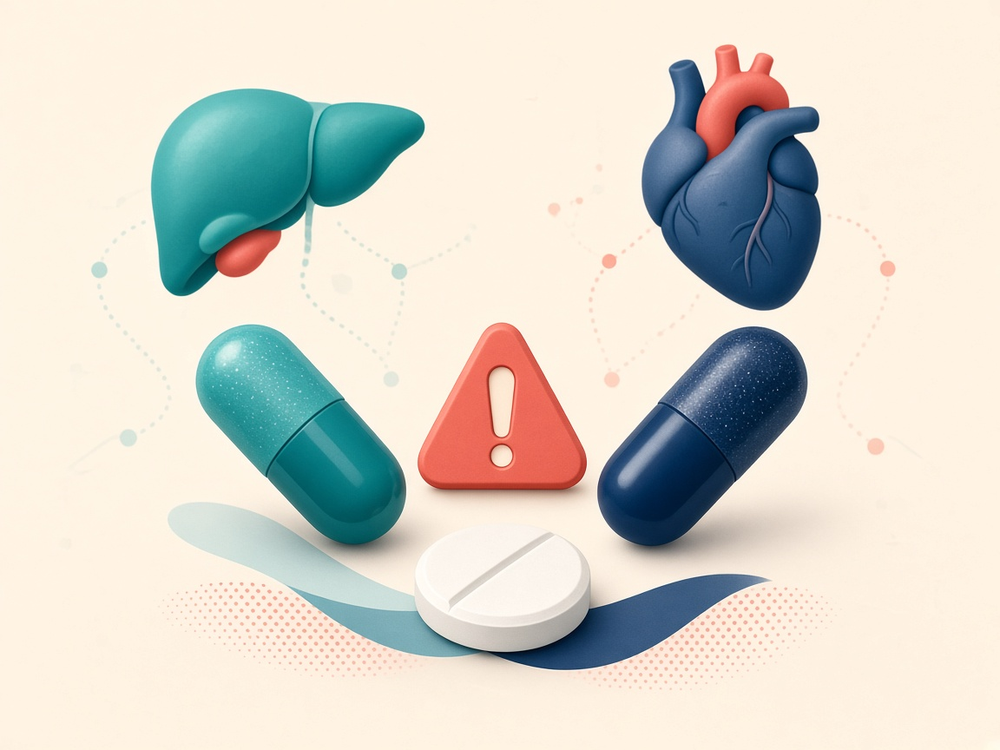
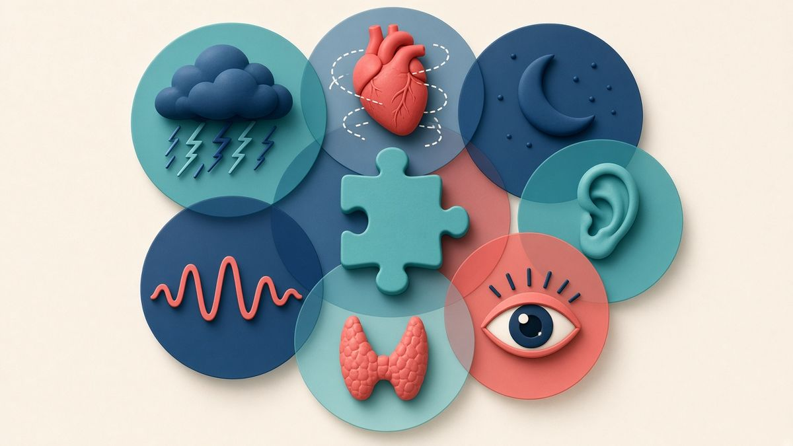
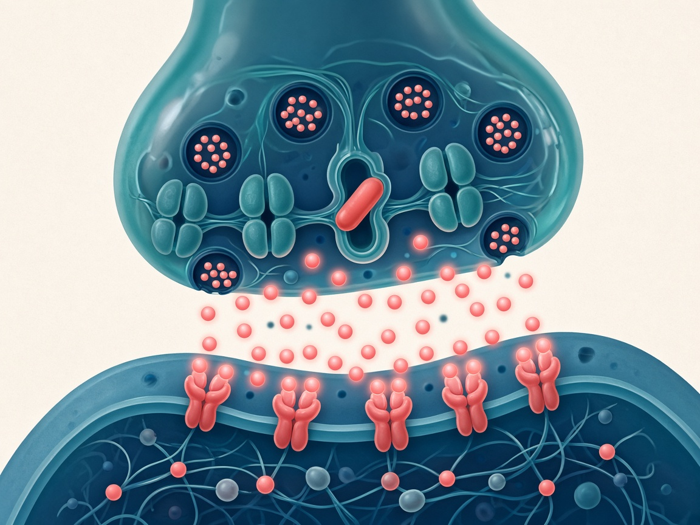
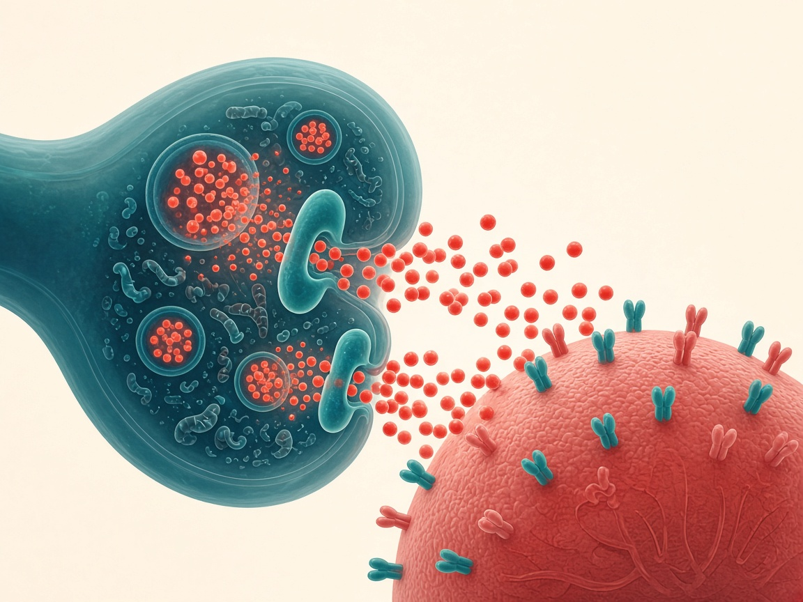
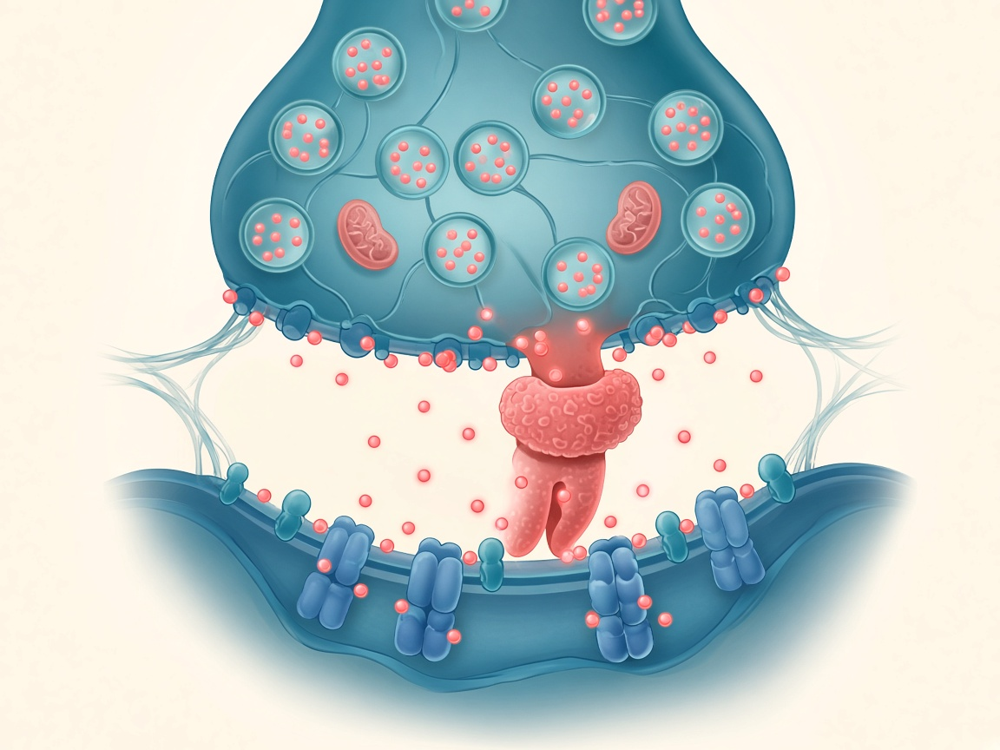
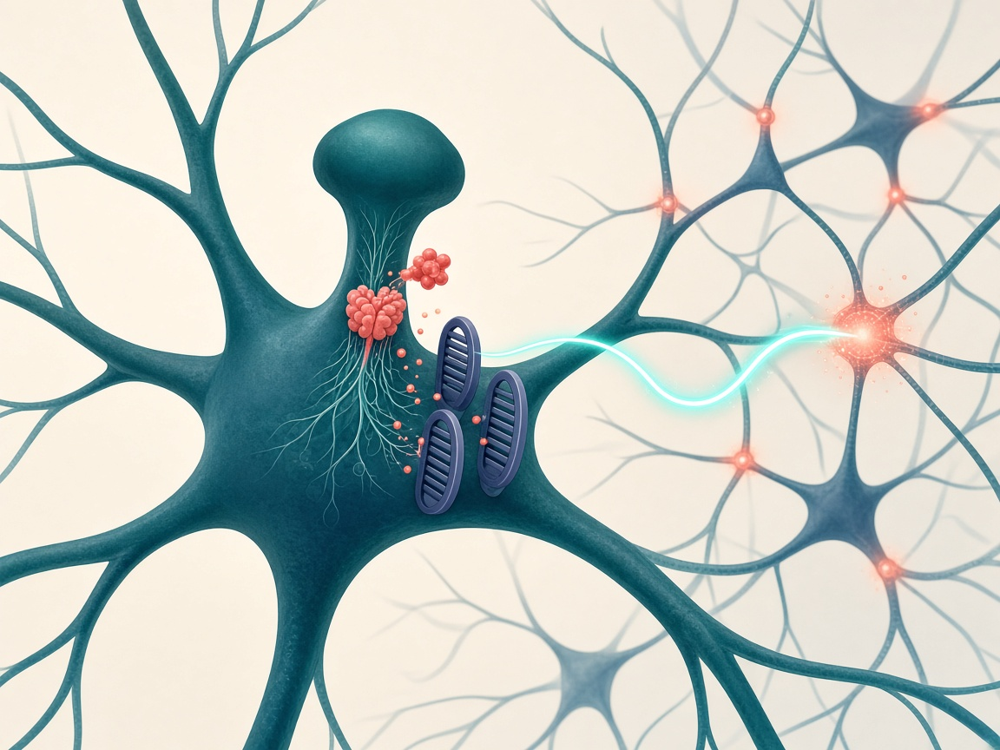

ADHD for UK pharmacists & prescribers
A practical, evidence-based course built around NICE NG87, UK product information (SPCs), SPS and MHRA guidance, with interactive cases from your own workbook and course exam.
Audience: GPhC-registered pharmacists and pharmacist independent prescribers (with a Wales/Cardiff lens).
Guidance status
NICE NG87 — Attention deficit hyperactivity disorder: diagnosis and management. Published 14 March 2018; last updated 13 September 2019. The live NICE page (checked 20 Oct 2026) states it was last reviewed 23 July 2026 as part of NICE's surveillance, with no change to recommendations. Minor updates: May 2025 (link to NICE HealthTech guidance on QbTest), January 2023 (ICD-11 terminology), March 2022 (rec 1.7.22 clarified to apply to methylphenidate only).
Note: the July 2026 review text on the NICE page mentions "adapted trauma-focused treatment", which appears to be an editorial mismatch on NICE's site. We report it as found.
Modules
0/10 completed. Mark each module complete at the bottom of its page.
1. Overview & DSM-5
Core symptoms, prevalence, under-recognised groups
Not completed2. Neurobiology & mechanisms
Networks, dopamine/noradrenaline, how each drug works
Not completed3. Recognition & diagnosis
NG87 referral, rating scales, collateral history, checklists
Not completed4. Treatment pathway
Children, adults, under-5s, the 6-week trial
Not completed
5. Drug monographs & titration
Stepper, MR profiles, CD rules
Not completed
6. Monitoring & shared care
Growth, BP/HR, annual review, tics, Wales shared care
Not completed
7. Adverse effects & special situations
Interactions, pregnancy, driving, travel
Not completed
8. Differentials & comorbidity
What else could it be?
Not completed9. The pharmacist's role
Counselling, shortages, CD handling, red flags
Not completed10. Branching cases
12 interactive walkthroughs
Not completed11. Practice handbook
Every brand, switching, missed doses, scripts
Not completedHow to use this course
- Each module starts with written teaching, then a visual learning section with numbered figures, then a short quiz and its sources.
- Open Deep dive panels for detail, tap flip cards to self-test, and try the titration stepper (Module 5), BP tool and monitoring checklist (Module 6).
- Your course exam questions are reproduced as a quiz with corrections where the original answers conflicted with NICE/SPC.
- Progress, checklist ticks and best quiz scores are stored in
localStorageon this device only.
Overview & DSM-5
ADHD is a neurodevelopmental condition defined by a persistent pattern of inattention and/or hyperactivity-impulsivity that interferes with functioning or development.
- Describe the core symptom domains and presentations of ADHD
- Apply the DSM-5 thresholds (age, number, duration, settings)
- Recognise groups in which ADHD is under-recognised
- Discuss balanced views on prevalence and diagnosis rates
What ADHD is
ADHD is heterogeneous: symptoms vary between people, across settings and over time. Diagnosis is clinical, based on a full history and observation; there is no single test. NICE NG87 uses DSM-5 or ICD-11 criteria NICE NG87.
DSM-5 criteria in brief
| Criterion | Requirement |
|---|---|
| Symptoms | ≥6 of 9 inattentive and/or ≥6 of 9 hyperactive-impulsive symptoms (aged ≤16); ≥5 for those aged 17 and over |
| Duration | At least 6 months, inconsistent with developmental level |
| Onset | Several symptoms present before age 12 (raised from 7 in DSM-IV) |
| Settings | Several symptoms present in two or more settings (home, school/work, social) |
| Impairment | Clear evidence symptoms interfere with or reduce the quality of social, academic or occupational functioning |
| Exclusion | Not better explained by another mental disorder; autism is no longer an exclusion (DSM-5 allows co-diagnosis) |
Presentations
Predominantly inattentive, predominantly hyperactive-impulsive and combined. Presentation can change over time; hyperactivity often becomes inner restlessness in adults.
ICD-11
ICD-11 (6A05) describes ADHD with predominantly inattentive, predominantly hyperactive-impulsive and combined presentations, and does not use a fixed symptom count. NICE added ICD-11 references in January 2023.
Under-recognised groups NICE NG87
NICE NG87 1.2.1 asks professionals to be aware that these groups may have an increased prevalence of ADHD: people born preterm; looked-after children and young people; children and young people diagnosed with oppositional defiant disorder or conduct disorder; children and young people with mood disorders (for example anxiety and depression); people with a close family member diagnosed with ADHD; people with epilepsy; people with other neurodevelopmental disorders (for example autism spectrum disorder, tic disorders, learning disability [intellectual disability] and specific learning difficulties); adults with a mental health condition; people with a history of substance misuse; people known to the Youth Justice System or Adult Criminal Justice System; and people with acquired brain injury. NICE 1.2.2 adds that ADHD is thought to be under-recognised in girls and women: they are less likely to be referred, more likely to have undiagnosed ADHD, and more likely to receive an incorrect diagnosis of another mental health or neurodevelopmental condition.
Prevalence and balance
Estimates of childhood prevalence are commonly quoted at around 5% worldwide and adult prevalence at around 2.5–3% Not verified live; figures vary with method and criteria. UK diagnosis and prescribing have risen markedly over the last decade, with long waiting lists. Debate continues about over- vs under-diagnosis, the role of private assessments, and the medicalisation of normal variation — while the evidence that untreated ADHD is associated with worse educational, occupational, injury and justice outcomes is substantial. A balanced pharmacist neither dismisses nor over-promises.
Deep dive: Controversies to know about
- Relative age effect: the youngest children in a school year are more likely to be diagnosed and treated, suggesting some immaturity is labelled ADHD.
- Private diagnoses and shared care: variability in assessment quality has led some NHS areas to review private diagnoses before accepting shared care.
- Long-term benefit: short-term RCT efficacy is robust; long-term outcome data are mostly observational.
- Adult ADHD validity is now widely accepted, but late-onset presentations require careful exclusion of other causes.
Deep dive: Correction to your workbook
The workbook cites NICE CG72 (2008). CG72 was replaced by NG87 in March 2018 — use NG87 for all current practice.
Flip-card self test
Illustrations are artistic; every clinical label is written in the page text/SVG so it stays accurate.
Step-by-step walkthrough (5 steps)
- Look for the pattern, not one moment. The boy gazing away from his worksheet shows inattention, but every child drifts sometimes. DSM-5 requires at least 6 symptoms (under 17 years) persisting for 6 months, to a degree inconsistent with developmental level.
- Compare with same-age peers. His classmate is working steadily on the same task. Comparing with peers of the same developmental age is how "inconsistent with developmental level" is judged — summer-born, younger children in a year group are a known source of over-identification.
- The teacher is a key informant. Teacher observations and teacher rating scales provide the second setting. NICE NG87 1.3.3 requires symptoms to be pervasive across two or more important settings (for example home and school).
- Impairment, not just symptoms. The question is whether symptoms cause at least moderate psychological, social or educational impairment (NG87 1.3.3). A bright child who copes well may have symptoms without meeting the diagnosis.
- Pharmacist relevance. You will rarely see the classroom, so ask parents what school reports say and whether support is in place. Signpost to the school SENCo and remember that support should not wait for a formal diagnosis (NG87 1.2.7).
Step-by-step walkthrough (5 steps)
- Emotional overwhelm. Head in hands: adults often describe frustration, low tolerance of stress and emotional dysregulation. This is common in adult ADHD but is not a DSM-5 core criterion, so look for the core symptoms too.
- Disorganisation and missed deadlines. The wall of sticky notes and the calendar show attempts to stay organised that are not working. These are inattention symptoms in their adult form, and adults need at least 5 symptoms (age 17+) under DSM-5.
- Distractibility. Taking a phone call mid-task shows easy distraction by external stimuli. Ask how often tasks are started but not finished.
- Inner restlessness replaces running about. Overt hyperactivity often fades with age into inner restlessness, fidgeting and difficulty relaxing. It is easily misread as anxiety, so take a careful history.
- Childhood onset is required. Several symptoms must have been present before age 12, even if the diagnosis comes late. Collateral history from a parent or old school reports helps. NICE 1.2.10: refer adults without a childhood diagnosis when symptoms began in childhood, have persisted throughout life, are not explained by another psychiatric diagnosis and cause at least moderate impairment.
Step-by-step walkthrough (5 steps)
- Domain 1: inattention. The clouded head stands for inattention: careless mistakes, not listening, losing things, forgetfulness, poor follow-through. It is often the main domain in girls and adults, and is more easily missed (NG87 1.2.2).
- Domain 2: hyperactivity. The running figure stands for motor overactivity: fidgeting, leaving one's seat, running or climbing, and being "on the go".
- …and impulsivity. The hand on the button stands for impulsivity: blurting out answers, difficulty waiting, interrupting. It drives many of the safety risks in ADHD, such as accidents and risky driving.
- Three presentations. Inattentive, hyperactive-impulsive or combined, depending on which thresholds are met. Presentation can change over time, so it describes the current picture and is not a fixed subtype.
- Why it matters for prescribing. Medication targets symptoms in both domains. Choose outcome measures (rating scales, functional goals) that match the person's main problems and record them at baseline (NG87 1.7.26).
- NICE NG87 (2018, updated 2019; reviewed July 2026), recs 1.2.1–1.2.2. nice.org.uk/guidance/ng87
- American Psychiatric Association. DSM-5 ADHD fact sheet; CDC "Clinical care: symptoms and diagnosis of ADHD" (DSM-5 criteria).
- WHO ICD-11, 6A05 Attention deficit hyperactivity disorder.
- Prevalence figures: commonly cited meta-analytic estimates — not independently verified live for this build.
Neurobiology & mechanisms
ADHD is highly heritable and associated with differences in fronto-striatal, fronto-parietal and default-mode networks, and in catecholamine (dopamine and noradrenaline) signalling.
- Outline the neurobiological model of ADHD and its limits
- Explain the mechanism of each licensed UK ADHD medicine
- Link mechanism to onset, duration and adverse effects
Causes and brain networks
Twin studies suggest heritability of roughly 70–80% Not verified live, with many common genetic variants of small effect plus environmental contributions (prematurity, low birth weight, prenatal exposures). Imaging studies show group-level differences in prefrontal cortex, striatum and cerebellum and in connectivity between attention, executive and default-mode networks — but no scan or biomarker can diagnose an individual.
The catecholamine model
Prefrontal executive functions (working memory, inhibition, planning) depend on optimal levels of noradrenaline (acting on α2A receptors) and dopamine (D1 receptors). All licensed ADHD medicines increase catecholamine signalling in these circuits, by different routes.
How each medicine works
| Medicine | Primary mechanism | Clinical consequence |
|---|---|---|
| Methylphenidate | Blocks the dopamine transporter (DAT) and noradrenaline transporter (NET), inhibiting reuptake | Rapid onset (30–60 min IR); effect follows plasma levels; duration depends on formulation |
| Lisdexamfetamine | Inactive prodrug; hydrolysed in red blood cells to dexamfetamine + L-lysine | Smooth onset; effect up to ~13 h (children) / ~14 h (adults) (SPC §5.1); lower but not absent abuse potential, including by injection or snorting (prodrug) |
| Dexamfetamine | Reverses DAT/NET and VMAT2, releasing dopamine and noradrenaline; also blocks reuptake | Rapid onset, ~4–6 h (IR); greater misuse potential |
| Atomoxetine | Selective noradrenaline reuptake inhibitor (increases dopamine in prefrontal cortex, where NET clears dopamine) | Gradual onset over weeks; not a CD; CYP2D6 metabolism |
| Guanfacine (Intuniv) | Selective α2A-adrenoceptor agonist strengthening prefrontal signalling | Gradual onset; sedation, hypotension, bradycardia; taper to stop (rebound hypertension) |
Deep dive: Pharmacokinetics that matter in practice
- Methylphenidate: short half-life (~2–3 h); formulations (IR, OROS, beaded MR) determine profile. Metabolised mainly by carboxylesterase CES1 — not CYP-dependent.
- Lisdexamfetamine: conversion is rate-limited, giving low between-patient variability; not affected by GI pH in the way amfetamine salts are.
- Amfetamines: renal excretion increases in acidic urine (e.g. high-dose vitamin C) and decreases in alkaline urine (e.g. sodium bicarbonate) {SPC}.
- Atomoxetine: CYP2D6 — poor metabolisers (and those taking strong CYP2D6 inhibitors such as fluoxetine or paroxetine) have markedly higher exposure (SPC: ~6–8-fold AUC with strong inhibitors at steady state).
- Guanfacine: CYP3A4 — halve the dose with moderate/strong CYP3A4 inhibitors; increase with inducers {SPC}.
Flip-card self test
Illustrations are artistic; every clinical label is written in the page text/SVG so it stays accurate.
Each mechanism below is a labelled, step-through diagram: press Next (or tap a numbered step) to build it up one stage at a time. Numbers on the diagram match the numbered explanation.
Step-by-step walkthrough (5 steps)
- Prefrontal cortex. The front of the brain supports attention, working memory, planning and inhibition. It depends on balanced noradrenaline (α2A) and dopamine (D1) signalling, and this is the main target of ADHD medicines.
- Striatum. Deep in the brain, the striatum links reward and motivation with movement. Dopamine here matters for responding to delayed rewards.
- Where the pathways start. Dopamine pathways start in the midbrain, and noradrenaline projections start in the locus coeruleus of the brainstem. The highlighted tracts show how widely these systems project.
- Cerebellum and wider networks. Imaging studies also report group differences in the cerebellum and the default-mode network. These are average differences between groups, so imaging is not used to diagnose ADHD.
- Clinical relevance. The same catecholamine systems also control appetite, sleep, heart rate and blood pressure. That is why stimulant adverse effects are predictable and why HR and BP are monitored (NG87 1.8.9).
Step-by-step walkthrough (4 steps)
- Vesicles store transmitter. Dopamine and noradrenaline are packed into vesicles by VMAT2, ready for release.
- Release into the cleft. An action potential makes vesicles fuse with the membrane and release transmitter into the synaptic cleft.
- Receptors receive the signal. Transmitter binds postsynaptic receptors (D1 for dopamine; α-adrenergic for noradrenaline) and changes the activity of the next neuron.
- Transporters end the signal. DAT and NET pump transmitter back into the terminal, so the signal is brief. Each ADHD medicine acts at one of these steps; the interactive diagrams below show which.
3Methylphenidate — blocks the dopamine and noradrenaline transporters
- Dopamine
- DAT
- NET
- VMAT2 (on vesicle)
- Receptor
- Methylphenidate
Step-by-step — tap a step or use Next
- Release. An action potential makes vesicles fuse with the terminal membrane and release dopamine into the synaptic cleft. Nearby noradrenergic terminals release noradrenaline in the same way.
- Reuptake ends the signal. The dopamine transporter (DAT) and noradrenaline transporter (NET) pump transmitter back into the terminal within milliseconds, so each signal is brief. VMAT2 then refills the vesicles.
- Methylphenidate blocks DAT and NET. Methylphenidate binds DAT and NET and blocks reuptake (the red diamonds). The SPC says it is "thought to block the reuptake of noradrenaline and dopamine into the presynaptic neurone and increase the release of these monoamines into the extraneuronal space" (Concerta XL SPC §5.1). "Increase the release" here means more transmitter outside the neuron. Unlike amfetamine, methylphenidate is not a transporter substrate and does not empty vesicles, so it is best taught as mainly a reuptake inhibitor.
- More signal at the receptors. Dopamine and noradrenaline stay longer in the cleft and stimulate D1 and α-adrenergic receptors. This is thought to improve signal-to-noise in prefrontal–striatal circuits, and so attention and impulse control.

Sources: Concerta XL SPC §5.1 (emc, rev. 06/11/2025): "the mode of therapeutic action in ADHD is not known". The transporter model is a simplified teaching model from standard pharmacology texts.
4Amfetamines — dexamfetamine, and lisdexamfetamine → dexamfetamine
- Dopamine
- DAT
- NET
- VMAT2
- Receptor
- Amfetamine
- TAAR1 / MAO (steps 4–5)
Step-by-step — tap a step or use Next
- Normal release and reuptake. As in any catecholamine synapse, vesicles release dopamine and DAT/NET recycle it.
- Amfetamine is carried in by DAT. Dexamfetamine is a substrate of DAT and NET, so the transporter carries it into the terminal. Lisdexamfetamine itself is inactive; it is hydrolysed, mainly by red blood cells, to dexamfetamine (Elvanse SPC §5.1).
- VMAT2 is disrupted. Inside the terminal, amfetamine interferes with VMAT2 and vesicle storage, so dopamine leaks out of vesicles into the cytosol.
- Transporters run in reverse. The high cytosolic dopamine drives DAT (and NET) in reverse, pumping transmitter out into the cleft independently of nerve firing. Amfetamine also competitively blocks reuptake. It also activates the intracellular trace-amine receptor TAAR1, which promotes transporter reversal and internalisation, and it weakly inhibits MAO, so less cytosolic dopamine is broken down (simplified textbook model; not in the SPC).
- Large rise in synaptic dopamine and noradrenaline. The net result is a larger increase in released transmitter than with a pure reuptake blocker. This explains the strong effect, and the higher misuse potential of IR dexamfetamine.

Sources: Elvanse SPC §5.1 (emc, rev. 02/10/2026): "thought to be due to its ability to block the reuptake… and increase the release" of noradrenaline and dopamine. VMAT2 and transporter-reversal detail is a simplified textbook pharmacology model.
5Atomoxetine — selective noradrenaline transporter (NET) inhibitor
- Noradrenaline
- Dopamine
- NET
- VMAT2
- Receptor
- Atomoxetine
Step-by-step — tap a step or use Next
- Noradrenaline is released. Noradrenergic terminals in the prefrontal cortex release noradrenaline (NA) onto α2A and other adrenergic receptors.
- NET clears NA — and dopamine in the PFC. NET recycles NA. The prefrontal cortex has few dopamine transporters, so NET also clears much of the dopamine there.
- Atomoxetine blocks NET. Atomoxetine is "a highly selective and potent inhibitor of the pre-synaptic noradrenaline transporter", with no direct effect on serotonin or dopamine transporters (atomoxetine SPC §5.1).
- More NA everywhere; more DA mainly in the PFC. Noradrenaline rises wherever NET is blocked, and dopamine rises mainly in the prefrontal cortex. It does not rise much in the striatum and nucleus accumbens, which is thought to explain atomoxetine's low misuse potential.

Sources: Atomoxetine SPC §4.4, 4.5, 5.1 (emc). The "prefrontal dopamine via NET" point is a widely taught pharmacology model (simplified).
6Guanfacine — α2A-adrenoceptor agonist on prefrontal dendritic spines
- Glutamate
- cAMP
- HCN channel
- α2A receptor
- Guanfacine
Step-by-step — tap a step or use Next
- Glutamate input arrives. A pyramidal neuron in the prefrontal cortex receives glutamate signals from neighbouring neurons on its dendritic spines. Recurrent firing in these networks holds information "online" (working memory).
- cAMP opens HCN channels and the signal leaks. When cAMP is high (for example under stress or with low noradrenergic tone), HCN channels near the synapse open. Current leaks out and the network signal fades.
- Guanfacine stimulates α2A receptors. Guanfacine is a selective α2A agonist, with 15–20 times higher affinity for α2A than for α2B/α2C (Intuniv SPC §5.1). α2A couples to Gi, which inhibits adenylyl cyclase (AC), so cAMP falls.
- HCN channels close and the signal persists. With less cAMP, HCN channels close, the input is retained and prefrontal network firing strengthens. This is the proposed basis for improved attention and behavioural control. It is a postsynaptic effect, not a change in dopamine release.

Sources: Intuniv SPC §4.2, 4.4, 5.1 (emc, rev. 05/03/2026): "mode of action of guanfacine in ADHD is not fully established". The HCN/cAMP model is from prefrontal pharmacology research (Arnsten); it is simplified and preclinical.
- NICE NG87 (context). SPCs on emc: Concerta XL (rev. 06/11/2025), Elvanse (rev. 02/10/2026), Amfexa, Strattera/atomoxetine, Intuniv (rev. 05/03/2026) — §5.1/5.2 pharmacology.
- Arnsten AFT. Catecholamine regulation of the prefrontal cortex (review literature).
- Heritability estimates: twin study meta-analyses (e.g. Faraone & Larsson 2019) — not re-verified live.
Recognition, assessment & diagnosis (NG87)
In the UK, ADHD is diagnosed by a specialist after a full clinical and psychosocial assessment. Pharmacists contribute to recognition, signposting and the baseline physical health assessment before treatment.
- Know who diagnoses ADHD and the NG87 diagnostic threshold
- Use rating scales appropriately (Conners, SNAP-IV, SDQ, ASRS, DIVA-5) and understand QbTest
- Take a collateral history and assess impairment
- Complete a pre-treatment baseline assessment
Recognition and referral NICE NG87
- NICE does not support universal screening in nurseries or schools.
- For a child with suspected ADHD, primary care and school staff may consider a period of watchful waiting (up to 10 weeks) and offer parent/carer support (e.g. group parent-training). Refer to secondary care (child psychiatry, paediatrics or specialist ADHD service) if problems persist with at least moderate impact. NICE 1.2.7: offering parents or carers a referral to group-based ADHD-focused support should not wait for a formal diagnosis of ADHD.
- For adults, refer to a specialist adult ADHD service if typical symptoms began in childhood, have persisted, are not explained by another condition and cause moderate or severe psychological, social, educational or occupational impairment; or if a person was diagnosed as a child and symptoms continue.
- Primary care practitioners should not make the diagnosis or start medication in people without a specialist diagnosis.
Who diagnoses, and what threshold?
A specialist psychiatrist, paediatrician or other appropriately qualified healthcare professional with training and expertise in ADHD (NG87 1.3.1). Symptoms must meet DSM-5 or ICD-11 criteria and cause at least moderate psychological, social and/or educational or occupational impairment, based on interview and/or direct observation in multiple settings, and be pervasive across two or more important settings (1.3.3). Diagnosis should include a full clinical and psychosocial assessment (developmental and psychiatric history, observer reports, mental state) (1.3.1). The diagnostic process should also assess the person's needs, coexisting conditions, social, familial and educational or occupational circumstances and physical health, and, for children, their parents' or carers' mental health (1.3.4).
Rating scales: adjuncts, not diagnoses
NICE: rating scales and observations from people who know the person (e.g. teachers) are valuable adjuncts, but are not sufficient on their own for diagnosis.
| Tool | Who / age | Use | Notes |
|---|---|---|---|
| Conners (Conners 4 / Conners 3; CAARS for adults) | Parent, teacher and self-report; children/young people; CAARS for adults | Symptom severity, impairment, monitoring response | Proprietary (licensed); widely used in UK child services |
| SNAP-IV (26-item) | Parent and teacher; children 6–18 | DSM-based symptom ratings (0–3) + ODD items; titration monitoring | Freely available; quick |
| SDQ (Strengths & Difficulties Questionnaire) | Parent, teacher, self (11–17) | Broad behavioural screen incl. hyperactivity/inattention subscale | Not ADHD-specific; useful for comorbidity |
| ASRS v1.1 (WHO Adult Self-Report Scale) | Adults (self) | 18 items; Part A (6 items) is a screener | Screening only — high scores also occur in anxiety, depression, sleep problems |
| DIVA-5 (Diagnostic Interview for ADHD in Adults) | Adults; clinician-administered with a partner/family member where possible | Structured interview covering all DSM-5 criteria in childhood and adulthood, with impairment examples across life domains | Freely available from the DIVA Foundation; supports, does not replace clinical judgement |
| QbTest | NICE: an option in people aged 6–17 y (HealthTech guidance; linked from NG87 1.3.1), clinic-based | Computerised continuous-performance test with motion tracking | NICE HealthTech guidance (linked from NG87, May 2025) — adjunct only |
Collateral history
Because self-report is limited (especially for childhood symptoms), seek information from parents, partners, teachers and school reports. Useful sources: school reports ("daydreams", "could do better if he tried"), childhood health records, employer feedback, and a partner's account of day-to-day functioning. DIVA-5 is designed to be completed with an informant.
Assessing impairment
Impairment is the heart of the NICE threshold. Ask about education (exclusions, underachievement), work (job losses, conflict), relationships, finances, driving (accidents, fines), injuries, substance use, contact with the justice system and self-care. Symptoms without at least moderate impairment do not meet NG87's diagnostic threshold.
Deep dive: Baseline before medication (NG87 1.7.4–1.7.6)
Before starting medication: confirm diagnosis; review mental health and social circumstances (comorbidity, risk of misuse/diversion, home/school/work); physical health — medical history and current medicines, height and weight (centile chart for children), baseline pulse and BP (centile for children), and a cardiovascular assessment. An ECG is not needed before starting stimulants, atomoxetine or guanfacine unless the person has any feature in 1.7.5, or a coexisting condition treated with a medicine that may pose an increased cardiac risk (1.7.4). Refer for a cardiology opinion before starting (1.7.5) if: history of congenital heart disease or previous cardiac surgery; sudden death in a first-degree relative under 40 years suggesting a cardiac disease; shortness of breath on exertion compared with peers; fainting on exertion or in response to fright or noise; palpitations that are rapid, regular and start and stop suddenly (fleeting occasional bumps are usually ectopic and do not need investigation); chest pain suggesting cardiac origin; signs of heart failure; a murmur heard on cardiac examination; or blood pressure classified as hypertensive for adults. Children and young people: refer to a paediatric hypertension specialist before starting if blood pressure is consistently above the 95th centile for age and height (1.7.6).
Flip-card self test
Diagnosis checklist (NG87 1.3)
Baseline assessment before medication (NG87 1.7.4–1.7.6)
Illustrations are artistic; every clinical label is written in the page text/SVG so it stays accurate.
Step-by-step walkthrough (5 steps)
- A trained specialist. Diagnosis is made by a specialist psychiatrist, paediatrician or other appropriately qualified professional with ADHD expertise. Primary care should not make the diagnosis or start medication in children (NG87 1.3.1, 1.2.9).
- Collateral history from the parent. Parents provide the developmental and early-childhood history and describe functioning at home. For adults, a partner, parent or old school reports serve the same purpose.
- The child's own account. NICE encourages children and young people to give their own account. Mental state, coexisting conditions and the child's needs are part of the assessment (NG87 1.3.4).
- Information from several settings. School reports and rating scales complete the picture of pervasiveness (NG87 1.3.3). No single test, scan or scale makes the diagnosis (NG87 1.3.2).
- Pharmacist relevance. When a parent asks "can you tell if my child has ADHD?", explain the assessment pathway. Signpost to the GP and school, and offer support that does not wait for a diagnosis (NG87 1.2.7).
Step-by-step walkthrough (4 steps)
- Parent-completed scales. Conners, SNAP-IV and SDQ capture behaviour at home. They are quick and useful to track, but scores reflect the rater's perspective.
- Teacher-completed scales. A second rater in a second setting tests pervasiveness. Large disagreement between parent and teacher is itself clinically informative.
- Adult tools. The ASRS v1.1 is a self-report screener, and DIVA-5 is a structured diagnostic interview including childhood recall. A positive screen prompts assessment and is not a diagnosis.
- Scales support, not replace, clinical judgement. NICE: a diagnosis should not be made solely on rating scales or observation (NG87 1.3.2). Use the same scale at baseline and each dose change to measure response (NG87 1.7.26).
Step-by-step walkthrough (5 steps)
- Height on a centile chart. Measure and record against the normal range for age, height and sex before starting (NG87 1.7.4). This is the reference point for 6-monthly growth checks (NG87 1.8.5).
- Weight. Baseline weight lets you detect appetite-related weight loss. Children 10 years and under are then weighed every 3 months (NG87 1.8.5).
- Pulse and BP with the right cuff. Use an appropriately sized cuff and compare with the normal range for age (NG87 1.7.4). A consistently raised BP in a child (above the 95th centile) needs a paediatric hypertension referral before starting (NG87 1.7.6).
- ECG only when indicated. An ECG is not needed routinely. It is needed only for the cardiac features in NG87 1.7.5 (for example exertional syncope, or sudden cardiac death in a first-degree relative under 40) or a co-prescribed medicine with cardiac risk (NG87 1.7.4).
- Cardiovascular history. Ask about congenital heart disease, cardiac surgery, chest pain, rapid regular palpitations and breathlessness on exertion compared with peers. Any of these needs a cardiology opinion before starting (NG87 1.7.5).
- NICE NG87 recs 1.2 (recognition and referral), 1.3.1–1.3.6 (diagnosis), 1.7.4–1.7.6 (baseline before medication).
- DIVA Foundation — DIVA-5 (divacenter.eu). WHO ASRS v1.1. SNAP-IV (Swanson). SDQ (sdqinfo.org). Conners (MHS) — product information.
- NICE HealthTech guidance on QbTest (link added to NG87 May 2025).
The NICE treatment pathway
NG87 puts information, support and environmental modifications first, then a stepped medication sequence with defined decision points.
- Describe non-pharmacological care for under-5s, children and adults
- Apply the NG87 medication sequence for children and adults
- Explain the "6-week adequate trial" rule
- Know where tertiary advice is needed
Everyone: information, support and environmental modifications
Give tailored information about ADHD and its treatments; involve the person (and family) in a shared decision. Environmental modifications reduce the impact of symptoms — e.g. seating, lighting, noise, shorter tasks, movement breaks, structure at school or work. NICE advises these be implemented and reviewed before starting medication in children and adults.
Under 5 years NICE NG87
Offer an ADHD-focused group parent-training programme first-line (1.5.7). Medication in under-5s only after a second specialist opinion from an ADHD service with expertise in young children (1.5.9). Most ADHD medicines are not licensed below 6 years.
Children aged 5+ and young people
Group parent-training/education is offered to parents of children with ADHD, particularly with co-existing oppositional or conduct problems. CBT may be considered for young people who have benefited from medication but still have impairing symptoms. Medication is offered if ADHD symptoms still cause persistent significant impairment in at least one domain after environmental modifications.
Adults
Medication is first-line where symptoms cause significant impairment after environmental modifications. Consider non-pharmacological treatment (e.g. structured supportive psychological intervention focused on ADHD, CBT) for adults who choose not to take medication, have difficulty adhering, or for whom medication was ineffective or not tolerated (NG87 1.5.16; minimum content of a structured supportive psychological intervention plus regular follow-up, 1.5.18).
Benefits and harms — the conversation before any treatment NICE NG87
- Benefit: stimulants usually work within days of reaching an effective dose, but not everyone responds — which is why NICE builds in switches after 6-week trials and a second opinion if there is no response to stimulants and a non-stimulant (1.7.16).
- Growth: stimulants can slow height and weight gain in children; the average effect on height is generally reported as modest, but it varies, so height is plotted 6-monthly and planned breaks are considered if height is significantly affected (1.8.5, 1.8.7). Size of effect not verified live
- Cardiovascular: stimulants and atomoxetine raise average heart rate and blood pressure a little; long-term observational studies suggest a small increase in cardiovascular risk (mainly hypertension) with longer use, so HR and BP are checked before and after each dose change and every 6 months (1.8.9–1.8.11). Magnitude not verified live
- Non-drug options remain first-line for under-5s (1.5.7) and are valid choices for adults who prefer them (1.5.16).
The 6-week rule
Diet
Do not advise eliminating artificial colourings and additives as a general treatment (1.6.2), and do not advise or offer omega-3/6 fatty acid supplements for treating ADHD (1.6.4). Ask whether particular foods or drinks seem to affect behaviour: if there is a clear link, advise a food-and-behaviour diary, and if the diary supports a relationship, offer referral to a dietitian, with any specific elimination diet managed jointly by the dietitian, specialist and family (1.6.3). Tell families there is no evidence on the long-term effectiveness or harms of a "few food" diet and only limited evidence of short-term benefit (1.6.5). Encourage a balanced diet, good nutrition and regular exercise.
Deep dive: Why lisdexamfetamine first in adults is debated
NICE allows either lisdexamfetamine or methylphenidate first in adults, reflecting network meta-analysis data (amfetamines slightly more efficacious in adults; methylphenidate best balance in children) and cost. Locally, formulary choice, shortages and patient preference drive selection.
Illustrations are artistic; every clinical label is written in the page text/SVG so it stays accurate.
1Children (5+) and young people — medication sequence
NG87 1.7.7–1.7.10 apply from age 5; most UK licences start at 6 years, so use at age 5 is off-label (NG87 notes this).
- Step 0 — information, support, environmental modificationsEducation, school adjustments, parent-training/support (1.5); medication if persistent significant impairment
- Step 1 — Methylphenidate (short- or long-acting) (1.7.7)Titrate weekly; adequate trial = 6 weeks at an adequate dose
- Step 2 — Lisdexamfetamine (1.7.8)If insufficient benefit after a 6-week trial of methylphenidate
- Step 2b — Dexamfetamine (1.7.9)If responding to lisdexamfetamine but cannot tolerate its longer effect profile
- Step 3 — Atomoxetine or guanfacine (1.7.10)If intolerant of methylphenidate and lisdexamfetamine, or no response to separate 6-week trials of both
- Beyond — tertiary service adviceOther medicines (e.g. clonidine, atypical antipsychotics) only with tertiary advice
2Adults — medication sequence
- Step 0 — information and support; medication if symptoms still cause significant impairmentafter environmental modifications have been implemented and reviewed
- Step 1 — Lisdexamfetamine OR methylphenidate (1.7.11)Shared decision on first choice
- Step 2 — Switch to the other (1.7.12–1.7.13)If insufficient benefit after a 6-week trial at an adequate dose
- Step 2b — Dexamfetamine (1.7.14)If responding to lisdexamfetamine but cannot tolerate its longer effect profile
- Step 3 — Atomoxetine (1.7.15)If intolerant of lisdexamfetamine and methylphenidate, or no response to separate 6-week trials
- Beyond — tertiary service advice (1.7.17)e.g. guanfacine (off-label in adults), other medicines
Step-by-step walkthrough (4 steps)
- A trained facilitator. A group programme led by a trained facilitator is first-line for parents of children under 5 (NG87 1.5.7). Medication is not offered under 5 without a second specialist opinion from an ADHD service with expertise in young children, ideally tertiary (NG87 1.5.9).
- Parents learning together. The group format gives parents behaviour strategies, structure and peer support, and reduces the sense of blame.
- Structured content. Programmes focus on positive attention, clear routines, praise and consistent consequences. They are also useful for older children with oppositional or conduct problems.
- Start early. Support can start before a formal diagnosis (NG87 1.2.7). Parent training complements, but does not replace, medication when medication is indicated in older children.
Step-by-step walkthrough (5 steps)
- The adult with ADHD. Consider non-drug treatment for adults who choose not to take medication, have difficulty adhering, or for whom it is ineffective or not tolerated (NG87 1.5.16).
- Structured supportive intervention. The minimum offer is a structured supportive psychological intervention focused on ADHD, with regular follow-up in person or by phone. It may include elements of, or a full course of, CBT (NG87 1.5.18).
- Practical skills. Planners, lists and breaking tasks into steps are core strategies for organisation and time management.
- Time awareness. The timer represents time-management techniques, such as working in short timed blocks, which help with procrastination.
- Alongside medication too. If medication helps but symptoms still cause significant impairment, combine it with non-drug treatment (NG87 1.5.17).
- NICE NG87 recs 1.5.4, 1.5.7–1.5.18, 1.6.2–1.6.5, 1.7.7–1.7.17.
- Cortese S et al. Lancet Psychiatry 2018 network meta-analysis (context for first-line choices) — not re-verified live.
- Elvanse SPC (rev. 02/10/2026): licensed in children 6+ and adults; Elvanse Adult discontinued (NHS Surrey medicines advice Sept 2025; AWTTC Jan 2026).
Drug monographs & titration
Licensed doses come from the current SPCs on emc (checked 20 Oct 2026); BNF/BNFC figures are shown alongside, with doses above the licence flagged as off-label.
- Summarise licensed UK ADHD medicines, doses and key cautions
- Titrate stimulants and non-stimulants using SPC posology
- Choose and switch MR methylphenidate brands safely
- Apply controlled drug prescribing rules
Doses verified against BNF/BNFC (accessed 21 Oct 2026) and SmPCs; titrate per NICE NG87 1.7.27.
Monographs at a glance SPC
| Medicine (CD status) | Licensed use | Start & titration (SPC) | Licensed maximum (SPC) | BNF/BNFC (accessed 21 Oct 2026) | Key points |
|---|---|---|---|---|---|
| Methylphenidate IR (Medikinet, Ritalin) — Schedule 2 | Ritalin tablets: children 6+ and adults. Medikinet tablets: children 6+ only — "not licensed for use in adults" (adult use off-label) | Child 5 mg OD–BD, ↑ by 5–10 mg/day weekly. Ritalin adults: 10 mg BD (5 mg BD if judged appropriate, e.g. <70 kg), ↑ weekly by max 20 mg/day, in 2–3 divided doses | Child 60 mg/day; Ritalin adults 80 mg/day | BNFC 6–17 y: up to 60 mg/day in 2–3 doses (licensed max) or 2.1 mg/kg/day; up to 90 mg/day under specialist direction off-label BNFC 4–5 y: 2.5 mg BD, up to 1.4 mg/kg/day off-label BNF adult: up to 100 mg/day in 2–3 doses (above the Ritalin 80 mg licence) off-label | ~4 h duration; give with/after food (Medikinet) |
| Concerta XL and bioequivalent 22:78-type tablets — Schedule 2 | Children 6+; adults | 18 mg mane, ↑ 18 mg at ~weekly intervals. Adults new to methylphenidate: 18 mg | Child 54 mg; adult 72 mg | Concerta XL, BNFC: licensed max 54 mg; up to 2.1 mg/kg, max 108 mg/day under specialist direction off-label Concerta XL, BNF adult: max 108 mg/day off-label Delmosart, Xaggitin XL: max 54 mg/day in children and adults (SmPCs: 72 mg in adults) No BNF entries for Affenid XL or Xenidate XL | ~12 h; swallow whole; ghost tablet in stool. Conversion from IR 5/10/15/20 mg TDS → 18/36/54/72 mg |
| Medikinet XL (50:50) — Schedule 2 | Children 6+; adults | Child 10 mg mane; adults per SPC (morning + lunchtime regimen possible) | Child 60 mg; adult 1 mg/kg up to 80 mg | BNFC: licensed max 60 mg; up to 2.1 mg/kg, max 90 mg/day under specialist direction off-label BNF adult: max 100 mg/day off-label (SmPC: 80 mg and ≤1 mg/kg) | With or after breakfast; can be opened and sprinkled on apple sauce/yoghurt |
| Equasym XL (30:70) — Schedule 2 | Children 6+ (not licensed in adults) | 10 mg before breakfast, ↑ weekly | 60 mg | BNFC: licensed max 60 mg; up to 2.1 mg/kg, max 90 mg/day under specialist direction off-label BNF adult: max 100 mg/day off-label (no adult licence) | ~8 h; may be sprinkled; do not switch to/from other brands (SPS) |
| Meflynate XL (50:50) — Schedule 2 | Children 6+; adults | Child 10 mg; adults start 20 mg | Child 60 mg; adult 80 mg | No brand-specific BNF/BNFC entry: follow the SmPC (general methylphenidate entry: licensed child max 60 mg/day) | Bioequivalent to Metyrol XL, Ritalin XL, Focusim XL (SPS) |
| Lisdexamfetamine (Elvanse) — Schedule 2 | Children 6+ (after inadequate response to methylphenidate per licence) and adults | 30 mg mane (20 mg in some), ↑ by 10–20 mg at ~weekly intervals | 70 mg; 50 mg if CrCl <30 mL/min | BNFC 6–17 y: 30 mg (or 20 mg) mane, ↑ 10–20 mg weekly, max 70 mg/day BNF adult: 30 mg mane, ↑ 20 mg weekly, max 70 mg/day Severe renal impairment: max 50 mg/day. Matches the SmPC | Up to ~13 h (children) / ~14 h (adults) (SPC §5.1); capsule can be opened and dispersed in water, yoghurt or orange juice; avoid afternoon dosing |
| Dexamfetamine (Amfexa) — Schedule 2 | Children 6–17 (not licensed in adults) | 5 mg OD–BD, ↑ 5 mg weekly | Usual 20 mg/day; up to 40 mg rarely | BNFC 6–17 y: 2.5 mg 2–3 times a day, ↑ 5 mg weekly; usual max 1 mg/kg, up to 20 mg/day (40 mg/day has been required in some children); 2–4 divided doses BNF adult: 5 mg BD, ↑ weekly, max 60 mg/day off-label (no adult licence) | ~4–6 h; higher misuse risk; taper on stopping |
| Atomoxetine — not a CD (POM) | Children 6+; adults | Child ≤70 kg: 0.5 mg/kg/day for ≥7 days → 1.2 mg/kg. >70 kg and adults: 40 mg for ≥7 days → 80–100 mg | 100 mg/day (≤70 kg: 1.2 mg/kg usual target) | BNF/BNFC ≤70 kg: 0.5 mg/kg/day for 7 days → 1.2 mg/kg/day; max 1.8 mg/kg and 120 mg/day >70 kg: 40 mg → 80 mg (child) or 80–100 mg (adult); max 120 mg/day High doses under specialist direction; above 100 mg/day off-label (BNF: "doses above 100 mg daily not licensed") | Gradual onset; CYP2D6; hepatic: Child-Pugh B 50%, C 25% of dose; suicidality, liver injury warnings |
| Guanfacine MR (Intuniv) — not a CD (POM) | Children/adolescents 6–17 when stimulants unsuitable/ineffective | 1 mg, ↑ by ≤1 mg/week; target 0.05–0.12 mg/kg | 6–12 y: 4 mg; 13–17 y: 4 mg (34–41.4 kg), 5 mg (41.5–49.4 kg), 6 mg (49.5–58.4 kg), 7 mg (≥58.5 kg) | BNF/BNFC, children only: 1 mg, ↑ 1 mg weekly; maintenance 0.05–0.12 mg/kg; max per dose 4 mg (6–12 y, ≥25 kg); 13–17 y by weight 4/5/6/7 mg Halve with moderate/potent CYP3A4 inhibitors and ciprofloxacin No adult dose listed (adult use off-label) | Sedation, hypotension, bradycardia, weight gain; QT caution; no alcohol; taper ≤1 mg every 3–7 days; halve dose with CYP3A4 inhibitors |
Contraindications by product (SPC §4.3) SPC
| Product | Contraindications (SPC §4.3, emc, checked 20 Oct 2026) |
|---|---|
| Methylphenidate (Concerta XL SPC; other methylphenidate brands have similar lists — check each SPC) | Hypersensitivity; glaucoma; phaeochromocytoma; during or within 14 days of non-selective irreversible MAOIs; hyperthyroidism or thyrotoxicosis; diagnosis or history of severe depression, anorexia nervosa/anorexic disorders, suicidal tendencies, psychotic symptoms, severe mood disorders, mania, schizophrenia, psychopathic/borderline personality disorder; severe and episodic (type I) bipolar disorder that is not well controlled; pre-existing cardiovascular disorders (severe hypertension, heart failure, arterial occlusive disease, angina, haemodynamically significant congenital heart disease, cardiomyopathies, myocardial infarction, potentially life-threatening arrhythmias, channelopathies); pre-existing cerebrovascular disorders (cerebral aneurysm, vascular abnormalities including vasculitis, stroke) |
| Lisdexamfetamine (Elvanse) | Hypersensitivity to sympathomimetic amines; MAOIs or within 14 days of MAOI treatment; hyperthyroidism or thyrotoxicosis; agitated states; symptomatic cardiovascular disease; advanced arteriosclerosis; moderate to severe hypertension; glaucoma; phaeochromocytoma |
| Dexamfetamine (Dexamfetamine Sulfate Medice 5 mg SPC) | Hypersensitivity (including to sympathomimetic amines); glaucoma; phaeochromocytoma; symptomatic cardiovascular disease, structural cardiac abnormalities and/or moderate or severe hypertension, heart failure, arterial occlusive disease, angina, haemodynamically significant congenital heart disease, cardiomyopathies, MI, life-threatening arrhythmias, channelopathies; advanced arteriosclerosis; MAOIs or within 14 days; hyperthyroidism/thyrotoxicosis; severe depression, anorexia nervosa, suicidal ideation, hyperexcitability, psychotic symptoms, poorly controlled type I bipolar disorder, schizophrenia, psychopathic/borderline personality disorder; Gilles de la Tourette syndrome or similar dystonias; cerebrovascular disorders; porphyria; history of drug or alcohol abuse |
| Atomoxetine | Hypersensitivity; with MAOIs, or within 2 weeks of stopping an MAOI (and no MAOI within 2 weeks of stopping atomoxetine); narrow-angle glaucoma; severe cardiovascular or cerebrovascular disorders; phaeochromocytoma or a history of it |
| Guanfacine (Intuniv) | Hypersensitivity only — but see the §4.4 warnings (hypotension, bradycardia, syncope, QT prolongation, sedation, rebound hypertension on abrupt withdrawal) |
Principles of titration (NG87)
- Titrate against symptoms and adverse effects in line with the BNF or BNFC until dose optimisation is achieved (1.7.27); prescribers should know the controlled drug legislation (1.7.25); weekly contact with the specialist team during titration is suggested (1.7.26).
- Slower titration and more frequent monitoring with neurodevelopmental, mental health or physical comorbidities (e.g. autism, tics, anxiety, epilepsy, cardiac disease) (1.7.28).
- Consider MR once-daily preparations for convenience, adherence, less stigma and no school dosing; IR preparations allow more flexible dosing and are useful during titration (1.7.20).
- Prescribe MR methylphenidate by brand (MHRA Drug Safety Update, September 2022): release profiles differ.
- Combining MR methylphenidate with IR methylphenidate later in the day may extend cover (1.7.22, methylphenidate only).
Controlled drug rules (England and Wales)
| Item | Methylphenidate, lisdexamfetamine, dexamfetamine | Atomoxetine, guanfacine |
|---|---|---|
| Schedule | Schedule 2 CD (CD2 POM) | Not controlled (POM) |
| Prescription requirements | Dose, form, strength, total quantity in words and figures, prescriber details; solid-dose methylphenidate, dexamfetamine and lisdexamfetamine must be stored in the locked CD cabinet (Safe Custody Regulations) | Standard POM |
| Validity | 28 days from the appropriate date | 6 months |
| Private prescriptions (Wales) | Private Schedule 2 and 3 CD prescriptions must be written on the designated private CD form — in Wales WP10PCD or WP10PCDSS (England FP10PCD) — and must include the prescriber's six-digit private prescriber identification number; community pharmacies should not dispense them without it. Welsh pharmacies submit the original private CD forms monthly with their NHS forms (NHSBSA; Community Pharmacy England). | Ordinary private prescription |
| Quantity | Good practice: no more than 30 days (NICE NG46 1.5.5) | Clinical judgement |
| Register | CD register entry on supply; ID checks on collection | — |
| Emergency supply | Not permitted for Schedule 1–3 CDs (the phenobarbital-for-epilepsy exception is a Schedule 3 drug and does not apply here) | Permitted under the usual conditions |
Deep dive: Formulation choice: why profiles matter
An MR methylphenidate product delivers an immediate-release portion (onset) and a modified-release portion (duration). Matching the IR:MR ratio and duration to the person's day (school, homework, driving to work, evening study) is often more useful than increasing the dose. Use the explorer below.
Titration stepper
Illustrative steps based on SPC posology. Choose a medicine, then step through. The dashed red outline marks the licensed maximum; a solid teal outline marks a usual maintenance target (not a maximum).
Compare release profiles
Source: SPS "Methylphenidate modified-release preparations" (updated 28 Aug 2025); product SPCs.
Illustrations are artistic; every clinical label is written in the page text/SVG so it stays accurate.
Step-by-step walkthrough (5 steps)
- 22:78-type tablets (Concerta XL and bioequivalents). The coat releases about 22% straight away (initial maximum at 1–2 h). The core releases the rest over the day, so levels rise to a peak at 6–8 h and cover lasts about 12 hours. Concerta XL, Affenid XL, Atenza XL and Matoride XL are osmotic tablets whose empty shell may appear in stool; Xaggitin XL (25:75) and Xenidate XL are non-osmotic but bioequivalent (SmPCs; SPS). Swallow whole and never crush.
- Beaded MR capsules. Medikinet XL (50:50, about 8 h), Equasym XL (30:70, about 8 h) and Meflynate/Ritalin XL-type capsules contain IR and MR beads. They can be opened and sprinkled on a spoonful of soft food (per each SPC), which helps children who cannot swallow capsules.
- Immediate-release tablets. IR methylphenidate lasts about 4 hours (SPS; Medikinet tablets SmPC 1–4 h). IR dexamfetamine is given once or twice daily and not too late after lunch (SmPC; it states no duration of effect). This allows flexible titration and top-up doses (NG87 1.7.20), but it means a school dose and a higher diversion risk (NG87 1.7.24).
- Lisdexamfetamine (not pictured). Lisdexamfetamine is a prodrug capsule, hydrolysed mainly by red blood cells to dexamfetamine (Elvanse SPC §5.1). Its effect lasts up to about 13 hours in children and 14 hours in adults (SPC §5.1), and the capsule can be opened and mixed into water, yoghurt or orange juice.
- Prescribe and supply by brand. The IR:MR ratio and duration differ, so MR methylphenidate must be prescribed by brand (MHRA Drug Safety Update, September 2022). Only switch within SPS bioequivalence groups, and only with a new prescription.
Step-by-step walkthrough (5 steps)
- Start low. Start with the SPC starting dose, for example methylphenidate IR 5 mg once or twice daily, Concerta XL 18 mg, or lisdexamfetamine 30 mg (20 mg in some patients).
- Weekly steps with review. Increase at about weekly intervals by the SPC increment. Record symptoms, adverse effects, HR and BP at baseline and at each change (NG87 1.7.26, 1.8.9), and titrate in line with the BNF/BNFC (NG87 1.7.27).
- Stop climbing when optimised. Dose optimisation means fewer symptoms, better behaviour, education, employment and relationships, with tolerable adverse effects (NG87 1.7.27). It does not mean the maximum dose.
- Licensed maximum. Know each product's licensed maximum, for example Concerta XL 54 mg in children and 72 mg in adults. Higher BNF/BNFC doses (for example methylphenidate up to 90 mg/day in children, or Concerta XL up to 108 mg/day) are off-label and for specialist direction only.
- Slower when there are comorbidities. Titrate more slowly and monitor more often with autism, tics, anxiety, epilepsy, cardiac disease and similar conditions (NG87 1.7.28). Judge the outcome after an adequate 6-week trial (NG87 1.7.8, 1.7.12).
3How long does each formulation work? (schematic)
- Shaded area = approximate period of useful effect
- Dashed = second IR dose at 12:00
- School day
- Homework
Durations from SPCs and SPS; individual responses vary.
Step-by-step — tap a step or use Next
- Immediate-release methylphenidate. Levels peak at about 1–2 hours (SmPC Tmax; SPS onset 1–2 h) and the effect lasts about 4 hours. A second dose at lunchtime (dashed curve) is needed to cover the afternoon, which means a controlled drug at school. IR is useful for flexible titration (NG87 1.7.20).
- Equasym XL (30:70). A smaller immediate portion and a larger delayed portion give two peaks, at about 1.5 and 4.5 hours (SmPC 5.2), and cover of about 8 hours, so a 07:30 dose fades around 15:30. It is taken before breakfast (SPC). SPS: no other MR product is bioequivalent to it.
- Medikinet XL (50:50). The larger immediate portion gives a stronger morning effect. A second rise about 3 hours later keeps levels at or above 75% of the peak for 3–4 hours (SmPC 5.2), and it lasts about 8 hours. It is taken with or after breakfast (SPC), so check that breakfast is actually eaten.
- Concerta XL (22:78). Only 22% is released straight away, so the first lesson can feel "slow". The osmotic core then covers about 12 hours, including homework time. Swallow whole.
- Lisdexamfetamine. A prodrug converted to dexamfetamine in the blood. It gives a smooth rise and an effect of up to about 13 hours in children and 14 hours in adults (Elvanse SPC §5.1). Avoid afternoon doses because of insomnia, and watch evening appetite.
- Match the profile to the person's day. Line the shaded effect up against school, homework, work or driving. If cover ends too early, consider an IR top-up later in the day (methylphenidate only; NG87 1.7.22) or another brand, prescribed by brand (MHRA 2022). Do not just increase the dose.
Sources: SPCs (emc) for Concerta XL, Medikinet XL, Equasym XL, Elvanse; SPS "Methylphenidate modified-release preparations" (28 Aug 2025); NICE NG87 1.7.20, 1.7.22.
- SPCs on emc: Concerta XL (rev. 06/11/2025); Medikinet XL; Equasym XL; Meflynate XL; Ritalin; Medikinet tablets; Elvanse (rev. 02/10/2026); Amfexa; atomoxetine; Intuniv (rev. 05/03/2026) — §4.2 posology.
- SPS: Methylphenidate modified-release preparations (updated 28 Aug 2025).
- MHRA Drug Safety Update, September 2022 — prescribe MR methylphenidate by brand.
- NICE NG87 1.7.20–1.7.28; NICE NG46 1.5.5 (controlled drugs); Misuse of Drugs Regulations 2001.
- BNF and BNFC monographs (accessed 21 Oct 2026): bnf.nice.org.uk and bnfc.nice.org.uk /drugs/ methylphenidate-hydrochloride, lisdexamfetamine-mesilate, dexamfetamine-sulfate, atomoxetine, guanfacine.
Monitoring, annual review & shared care
Monitoring is where pharmacists and pharmacist prescribers in primary care add most value under shared care.
- Apply NG87 monitoring for growth, BP/HR, sleep, tics and mood
- Use the BP/HR action thresholds
- Run an annual review
- Work within shared care (Cardiff & Vale CV01)
What to monitor and how often NICE NG87
| Parameter | Children & young people | Adults | Action |
|---|---|---|---|
| Height | Every 6 months, on a growth chart (1.8.5) | — | If growth affected, consider planned breaks (e.g. school holidays) or dose change; seek specialist advice |
| Weight | Children ≤10 y: every 3 months. Children >10 y and young people: at 3 and 6 months after starting, then every 6 months (more often if concerns). Plot on a growth chart (1.8.5) | Every 6 months (1.8.5); consider BMI if weight has changed as a result of treatment, and change medication if weight change persists (1.8.8) | If weight loss is a concern: medication with or after food, extra meals or snacks early morning or late evening when the effect has worn off, dietary advice, high-calorie nutritious foods (1.8.6) |
| Heart rate & BP | Before and after each dose change and every 6 months (1.8.9), on centile charts for children | See BP/HR tool below (1.8.11) | |
| Bloods / ECG | No routine blood tests (incl. LFTs) or ECGs unless clinically indicated (1.8.10) | ECG if cardiac symptoms or new cardiac-risk medicine | |
| Sleep | Monitor (e.g. sleep diary) and adjust timing/medication (1.8.17) | Sleep hygiene; melatonin only via specialist/shared care (Cardiff & Vale CV54 for children) | |
| Tics | Ask about new or worsening tics (1.8.13) | If tics worsen: consider whether related to stimulant; options include dose reduction, switching to a non-stimulant, or stopping (1.8.14) | |
| Mood & behaviour | Monitor the behavioural response to medication; ask about worsening anxiety, irritability, low mood and psychotic symptoms; atomoxetine: suicidal thoughts and liver injury symptoms (SPC warnings) | If behaviour worsens, adjust medication and review the diagnosis (1.8.18). Psychosis/mania: stop ADHD medication until resolved (1.7.19) | |
| Sexual dysfunction (atomoxetine) | Young people and adults on atomoxetine: ask about erectile and ejaculatory dysfunction (1.8.15) | Discuss; consider dose change or switch with the specialist | |
| Orthostatic hypotension (guanfacine) | Ask about dizziness on standing and fainting; check lying/standing BP if symptomatic | Sustained orthostatic hypotension or fainting episodes: reduce the dose or switch to another ADHD medication (1.8.12) | |
| Seizures | Ask about new seizures or worsening of existing seizures | Review ADHD medication and stop any medication that might be contributing; after investigation, cautiously reintroduce if it is unlikely to be the cause (1.8.16) | |
| Misuse/diversion | Monitor for changes in risk (1.8.19) | Discuss, involve specialist, consider lower-risk formulations (1.7.24) | |
| Effectiveness | Rating scales and functional goals at each review | Re-titrate or switch per pathway | |
Annual review NICE NG87
A healthcare professional with training and expertise in ADHD should review ADHD medication at least once a year and discuss with the person (and family) whether it should continue. The review should include preference, benefits, adverse effects, clinical need, effect of missed doses, planned dose reductions or periods of no treatment, physical and mental health, and need for psychological, educational or occupational support. NICE suggests considering a trial without medication or a dose reduction where appropriate to assess ongoing need — e.g. a "treatment break" timed to avoid exams (1.10.1–1.10.3). If medication is continued, document the reasons (1.10.3).
Shared care NICE NG87
After titration and dose stabilisation, prescribing and monitoring should be carried out under a shared care protocol with primary care (1.7.29). The specialist initiates, titrates and retains responsibility for review; primary care continues prescribing and routine monitoring and refers back with concerns.
- Cardiff & Vale UHB CV01 (Welsh Medicines Advice Service shared care list; 2025 version) covers methylphenidate, lisdexamfetamine and atomoxetine for ADHD "as part of a comprehensive treatment programme in children aged 6 years of age and over, young people and adults". Dexamfetamine and guanfacine are not on CV01; CV54 covers melatonin for children with sleep-onset difficulties.
- Under CV01 the consultant sends the shared care request and protocol to the GP, initiates after discussing options, benefits and risks, carries out the comprehensive baseline assessment, initial prescribing, baseline and continued monitoring, and titrates the dose. The protocol lists HR and BP before and after each dose change and every 6 months, with dose reduction prompted by tachycardia, arrhythmia or a significant rise in BP on 2 occasions.
- Guanfacine: AWTTC/LOWMAG advice (May 2025, ref. 6440) recommends Intuniv for use within NHS Wales in 6–17-year-olds for whom stimulants are not suitable, not tolerated or ineffective; local shared-care status varies by health board.
- The All Wales Shared Care Framework (AWTTC) sets the general principles, roles and responsibilities.
Tics
Tics often co-occur with ADHD and wax and wane naturally. NICE offers the same medication choices to people with tic disorders (1.7.18) but with slower titration (1.7.28). If tics emerge or worsen on a stimulant, decide whether they are related, then consider dose reduction, a switch to a non-stimulant (e.g. guanfacine in children/young people, atomoxetine) or stopping, and refer if severe.
Monitoring timeline
Monitoring visit checklist (NG87 1.8)
Illustrations are artistic; every clinical label is written in the page text/SVG so it stays accurate.
Step-by-step walkthrough (5 steps)
- Heart rate and BP. Check before and after every dose change and every 6 months, comparing with the normal range for age (NG87 1.8.9). Act on the thresholds in NG87 1.8.11.
- Sleep. Ask about sleep at each review and consider a sleep diary. Adjust the timing, dose or formulation accordingly (NG87 1.8.17).
- Weight and growth. Children 10 years and under: weight every 3 months. Older children and young people: weight at 3 and 6 months, then 6-monthly. Height 6-monthly on a growth chart (NG87 1.8.5).
- Annual review of need. At least once a year, a professional with ADHD expertise reviews whether medication should continue. This may include a planned trial without medication (NG87 1.10.1–1.10.3).
- No routine bloods or ECGs. Do not do routine blood tests (including LFTs) or ECGs unless there is a clinical indication (NG87 1.8.10). Monitoring is clinical, not laboratory-based.
Step-by-step walkthrough (4 steps)
- Measure height accurately. Use a stadiometer, with shoes off and the head level. Measure every 6 months in children and young people (NG87 1.8.5).
- Plot on a growth chart. Track the trajectory across centiles, not single readings. Crossing down centile lines matters more than one low value.
- Weight at the right interval. Weigh every 3 months at 10 years and under; at 3 and 6 months, then 6-monthly, if older (NG87 1.8.5). If weight loss is a concern, give the dose with or after food and add snacks when the effect has worn off (NG87 1.8.6).
- If height is affected. If a child has not met the height expected for their age, consider a planned treatment break over school holidays to allow catch-up growth (NG87 1.8.7).
Step-by-step walkthrough (4 steps)
- Late-night wakefulness. Difficulty getting to sleep is common with stimulants, but sleep problems also often predate treatment. A baseline sleep history and a sleep diary help to tell these apart (NG87 1.8.17).
- Check the dose timing. Ask when the last dose is taken. An IR top-up too late in the day, or a long-acting product taken late on non-school days, often explains insomnia.
- Low appetite at lunch. Appetite suppression peaks while the drug is active, often over lunch. Planning a good breakfast and an evening meal when the effect has worn off helps (NG87 1.8.6).
- Watch weight. Persistent poor intake shows up as weight loss on 3- or 6-monthly checks (NG87 1.8.5). Persistent weight change in adults may need a medication change (NG87 1.8.8).
- NICE NG87 recs 1.7.29, 1.8.5–1.8.19, 1.10.1–1.10.3 (review and discontinuation).
- Cardiff & Vale UHB shared care protocols CV01 (ADHD: methylphenidate, lisdexamfetamine, atomoxetine) and CV54 (melatonin) — WMAS listing and 2025 CV01 protocol text (search excerpt); full PDF not retrievable.
- AWTTC LOWMAG recommendation: guanfacine (Intuniv) PR, May 2025, ref. 6440.
- AWTTC All Wales Shared Care Framework (Aug 2025).
Adverse effects, interactions & special situations
Most adverse effects are dose- and timing-related. A few interactions and situations need firm action.
- Manage common adverse effects
- Identify clinically important interactions
- Advise on pregnancy, breastfeeding, driving and travel
Common adverse effects and management
| Effect | Typical drugs | Management |
|---|---|---|
| Reduced appetite, weight loss | Stimulants, atomoxetine | Dose with/after breakfast, high-calorie snacks, larger evening meal, monitor weight; dose/formulation change |
| Insomnia | Stimulants (esp. late or long-acting) | Earlier dosing, shorter-acting product, sleep hygiene, sleep diary; melatonin only via specialist |
| Headache, abdominal pain | Stimulants, atomoxetine | Often transient; take with food |
| Increased HR/BP | Stimulants, atomoxetine | Monitor; NG87 1.8.11 thresholds |
| Rebound irritability | IR stimulants | MR formulation or small later dose |
| Anxiety, tics | Stimulants | Dose reduction, switch, slower titration |
| Sedation, dizziness, hypotension, bradycardia | Guanfacine | Bedtime dosing option; taper to stop |
| Nausea, sexual dysfunction, suicidal ideation, liver injury (rare) | Atomoxetine | Take with food or split dose; counsel; stop if jaundice or liver injury |
| Psychosis/mania (rare) | Stimulants | Stop ADHD medication; specialist review (1.7.19) |
Percentage frequencies quoted in your workbook (e.g. "psychosis 1.5%") could not be verified against the SPC frequency tables and have not been reproduced. The workbook claim that sudden death risk on stimulants is "lower than the general population" is unsourced; SPCs warn that sudden death has been reported with structural cardiac abnormalities.
Key interactions SPC
| Combination | Effect | Advice |
|---|---|---|
| Stimulants or atomoxetine + MAOIs | Hypertensive crisis | Contraindicated during and within 14 days of MAOI |
| Stimulants + serotonergic drugs (SSRIs, SNRIs, triptans, tramadol) | Serotonin syndrome (rare) | Counsel on symptoms; monitor |
| Atomoxetine + strong CYP2D6 inhibitors (fluoxetine, paroxetine, bupropion, quinidine) | ~6–8× atomoxetine exposure | Slower titration; target dose may be lower |
| Atomoxetine + QT-prolonging drugs / salbutamol (high-dose IV/nebulised) | QT / cardiovascular effects | Caution |
| Guanfacine + CYP3A4 inhibitors (clarithromycin, ketoconazole) / inducers (carbamazepine, rifampicin) | ↑ / ↓ guanfacine levels | Halve dose with inhibitors; increase with inducers |
| Guanfacine + valproate | ↑ valproate levels | Monitor |
| Guanfacine + alcohol, sedatives, antihypertensives | Additive sedation/hypotension | Avoid alcohol; monitor BP |
| Stimulants + sympathomimetic decongestants (pseudoephedrine) | ↑ BP/HR | Advise avoiding OTC decongestants |
| Amfetamines + urinary acidifiers/alkalinisers | ↓/↑ amfetamine levels | Be aware of variability |
| Methylphenidate + alcohol | May worsen CNS adverse effects; with Concerta XL, alcohol >10% increased drug release in vitro | Avoid alcohol |
| Methylphenidate + halogenated anaesthetics | Risk of sudden BP and heart-rate increase during surgery | If surgery is planned, do not take methylphenidate on the day of surgery (SPC); tell the anaesthetist |
| Methylphenidate + clonidine or other centrally acting α2 agonists | Serious adverse events, including sudden death, have been reported with methylphenidate plus clonidine; long-term safety of the combination not systematically evaluated | Specialist decision only; monitor closely |
| Methylphenidate + coumarin anticoagulants, anticonvulsants (phenobarbital, phenytoin, primidone), tricyclics, SSRIs | Methylphenidate may inhibit their metabolism | When starting or stopping methylphenidate, dose adjustment and plasma levels (or INR for coumarins) may be needed |
| Methylphenidate + antihypertensives | May decrease antihypertensive effect | Monitor BP |
| Methylphenidate + dopaminergic drugs, including antipsychotics | Pharmacodynamic interactions (methylphenidate raises extracellular dopamine) | Caution; specialist advice |
Methylphenidate rows: Concerta XL SPC §4.5 (emc, rev. 06/11/2025).
Pregnancy and breastfeeding SPC §4.6
| Medicine | Pregnancy (SPC wording) | Breastfeeding (SPC wording) |
|---|---|---|
| Methylphenidate (Concerta XL) | First-trimester cohort data (≈3,400 pregnancies) do not suggest an overall increase in birth defects; a small increase in cardiac malformations (about 3 extra per 1,000). "Not recommended for use during pregnancy unless a clinical decision is made that postponing treatment may pose a greater risk to the pregnancy." | Excreted in breast milk. "A risk to the suckling child cannot be excluded"; decide whether to stop breastfeeding or stop/abstain from therapy, weighing benefits of each. |
| Lisdexamfetamine (Elvanse) | Dexamfetamine crosses the placenta; cohort data suggest no increase in malformations but an increased risk of pre-eclampsia and preterm birth; neonatal withdrawal possible. "Should only be used during pregnancy if the potential benefit justifies the potential risk to the foetus." | Amfetamines are excreted in human milk. "Should not be used during breast-feeding." |
| Dexamfetamine | As above for amfetamine exposure. "The use of dexamfetamine during pregnancy is not recommended." Women of childbearing age should stop dexamfetamine when intending to become pregnant. | Excreted in human milk; a risk to the infant cannot be excluded — decide whether to stop breastfeeding or stop/abstain from therapy. |
| Atomoxetine | Limited human data. "Should not be used during pregnancy unless the potential benefit justifies the potential risk to the foetus." | Not known if excreted in human milk. "Should be avoided during breast-feeding." |
| Guanfacine (Intuniv) | No or limited data; animal reproductive toxicity. "Not recommended during pregnancy and in women of childbearing potential not using contraception." | Unknown if excreted in human milk; a risk to the breastfed infant cannot be excluded — decide whether to stop breastfeeding or stop/abstain from guanfacine. |
Planning: discuss contraception and pregnancy plans with women of childbearing potential; refer a pregnancy to the specialist (and perinatal mental health team where appropriate) promptly; avoid stopping abruptly without a plan, balancing the risks of untreated ADHD (for example driving accidents). Not verified live Check UKTIS/BUMPS (pregnancy) and UKDILAS (breastfeeding) for current advice.
Driving
In the UK, it is an offence to drive with certain specified drugs above set limits; amfetamine (including dexamfetamine and lisdexamfetamine, which is converted to dexamfetamine) is one of them. There is a medical defence if the medicine was prescribed, taken as directed, and driving is not impaired. Methylphenidate is not a "specified drug" but the general offence of driving while impaired still applies. People with ADHD must tell the DVLA if it affects their ability to drive safely. Penalties for drug driving include a minimum 1-year ban, an unlimited fine, up to 6 months in prison and a criminal record.
Travel
GOV.UK ("Take medicine in or out of the UK", checked 20 Oct 2026): medicine containing a controlled drug must be carried in hand luggage when entering or leaving the UK, and may be taken away at the border if the person cannot prove it was prescribed for them. Taking medicine out of the UK: check whether it contains a CD, check the destination country's rules with its embassy before travelling, and carry proof that it is yours — a prescription or a letter from the doctor. Keep medicines in their original labelled packaging. Some countries restrict or ban amfetamines. Bringing medicine into the UK: non-UK residents need a letter of proof and may bring up to 3 months' supply (more only with a personal licence, in exceptional circumstances). UK residents who were prescribed medicine abroad should contact the Home Office Drug and Firearms Licensing Unit (DFLU) (GOV.UK).
Illustrations are artistic; every clinical label is written in the page text/SVG so it stays accurate.
Step-by-step walkthrough (5 steps)
- MAOIs: contraindicated. Stimulants and atomoxetine must not be used with an MAOI or within 14 days of stopping one, because of the risk of hypertensive crisis (SPC §4.3).
- Liver enzymes. Atomoxetine is a CYP2D6 substrate: fluoxetine or paroxetine can raise exposure several-fold, so titrate more slowly. Guanfacine is a CYP3A4/5 substrate: halve the dose with moderate or strong inhibitors, and consider re-titrating up with strong inducers (SPCs §4.2, 4.5).
- Heart and blood pressure. Additive effects on BP and HR come from decongestants (pseudoephedrine) and other sympathomimetics. QT-prolonging drugs need caution with atomoxetine and guanfacine.
- Methylphenidate-specific interactions. Methylphenidate can inhibit the metabolism of coumarins, some anticonvulsants, TCAs and SSRIs. Do not take it on the day of surgery with halogenated anaesthetics, and serious events have been reported with clonidine (Concerta XL SPC §4.5).
- Serotonergic drugs. Rare serotonin syndrome has been reported when methylphenidate is combined with serotonergic medicines. Counsel the patient on symptoms and stop methylphenidate if it is suspected.
Step-by-step walkthrough (4 steps)
- Plan ahead. Discuss contraception and pregnancy plans with every woman of childbearing potential. Guanfacine is not recommended in women of childbearing potential who are not using contraception (Intuniv SPC §4.6).
- Specialist and perinatal input. If a pregnancy is planned or confirmed, involve the specialist promptly. Methylphenidate is not recommended in pregnancy unless postponing treatment poses a greater risk, and lisdexamfetamine only if the benefit justifies the risk (SPCs §4.6).
- Shared, documented decision. Weigh the risks of untreated ADHD (for example accidents, driving and parenting stress) against the limited and mostly observational safety data. Check UKTIS/BUMPS for current advice.
- Breastfeeding. Lisdexamfetamine should not be used during breastfeeding and atomoxetine should be avoided. For methylphenidate, dexamfetamine and guanfacine, the SPC calls for a risk–benefit decision (SPCs §4.6).
Step-by-step walkthrough (4 steps)
- The driver's responsibility. People with ADHD must tell the DVLA if their condition affects their ability to drive safely. Untreated ADHD is itself a driving risk.
- Amfetamines are "specified drugs". Dexamfetamine (and lisdexamfetamine, which is converted to dexamfetamine) are listed under the drug-driving law. There is a medical defence if the drug was prescribed, taken as directed and driving was not impaired (GOV.UK).
- Carry evidence. Keep the medicine in its labelled packaging, or carry a copy of the prescription, to support the medical defence if stopped.
- Methylphenidate too. Methylphenidate is not a specified drug, but the general offence of driving while impaired still applies. Advise against driving if drowsy, dizzy or otherwise impaired, for example with guanfacine sedation.
Step-by-step walkthrough (5 steps)
- Hand luggage only. Medicine containing a controlled drug must be carried in hand luggage when entering or leaving the UK (GOV.UK).
- Original labelled packaging. Keeping the pharmacy label visible makes it easy to show the medicine is prescribed for that person.
- Prescription or letter. Carry a prescription or a letter from the doctor that proves the medicine is yours (GOV.UK). It should include the name, the medicines, doses and strengths.
- Check the destination's rules. Rules differ by country, and some restrict or ban amfetamines. Check with the destination country's embassy before travelling (GOV.UK).
- Coming back to the UK. Visitors may bring up to 3 months' supply. More than that needs a personal licence, which is only available in exceptional circumstances (GOV.UK, Home Office DFLU).
- SPCs on emc §4.3–4.6, 4.8 (Concerta XL, Elvanse, Amfexa, atomoxetine, Intuniv).
- GOV.UK — Drugs and driving: the law; GOV.UK — Take medicine in or out of the UK (checked 20 Oct 2026).
- NICE NG87 1.7.19, 1.8.11.
- UKTIS/BUMPS — not checked live for this build.
Differential diagnosis & comorbidity
Inattention and restlessness are non-specific. A careful history separates ADHD (trait-like, from childhood, pervasive) from conditions that are episodic, situational or of later onset.
- List the main differentials for ADHD symptoms
- Recognise common comorbidities
- Know where medicines or substances mimic ADHD
Differentials and comorbidities
| Condition | Distinguishing features | Notes |
|---|---|---|
| Anxiety disorders | Worry-driven inattention; situational | Often co-exists; treat both |
| Depression | Episodic; low mood, anhedonia, later onset | Co-exists; screen with PHQ-9 |
| Bipolar disorder | Distinct episodes of elevated mood, reduced need for sleep | Stop ADHD medication in mania (1.7.19) |
| Autism | Social communication differences, restricted interests | Frequently co-occurs; DSM-5 allows both |
| Learning disability / specific learning difficulties | Global or specific cognitive difficulty | Assess cognition; can co-exist |
| Sleep disorders (OSA, insufficient sleep, delayed sleep phase) | Daytime sleepiness, snoring | Sleep history; sleep studies |
| Hearing or visual impairment | Missed instructions | Check hearing/vision in children |
| Trauma / PTSD, attachment difficulties, adverse home environment | Hypervigilance, dissociation | Safeguarding; trauma-informed assessment |
| Substance misuse | Intoxication/withdrawal mimic ADHD | Screen (AUDIT, drug history); co-exists commonly |
| Thyroid disease, epilepsy (absences), acquired brain injury | Physical cause | Examination; investigations if indicated |
| Medicines | e.g. antihistamines (sedating), anticonvulsants, benzodiazepines, salbutamol, corticosteroids | Medication review — a pharmacist strength |
| Personality disorder (emotionally unstable) | Pervasive emotional instability, identity disturbance | Overlap in impulsivity; careful assessment |
| Tic disorders / Tourette syndrome | Tics | Co-occur; same medication choices with caution |
Clues that point to ADHD
- Onset in childhood (several symptoms before 12), even if diagnosed late
- Persistent, trait-like course rather than episodes
- Present across settings
- Collateral history confirms
Comorbidity is the rule
Co-existing conditions are common in ADHD (e.g. ODD/conduct disorder in children; anxiety, depression, substance use in adults; autism, tics, dyslexia, dyspraxia, epilepsy). Comorbidity affects titration speed and monitoring (NG87 1.7.28) but usually not medication choice (1.7.18).
Deep dive: Pharmacist angle: drug-induced symptoms
Medication reviews can unmask causes of inattention or agitation: sedating antihistamines, anticonvulsants (e.g. topiramate cognitive slowing), benzodiazepines, opioids, high-dose beta-agonists, corticosteroids, thyroxine excess, caffeine and energy drinks, cannabis and stimulant drugs.
Illustrations are artistic; every clinical label is written in the page text/SVG so it stays accurate.
Step-by-step walkthrough (6 steps)
- Anxiety and low mood. Poor concentration and restlessness are also features of anxiety and depression. Look at the time course: mood disorders are episodic, while ADHD is trait-like from childhood. Both often co-exist.
- Sleep problems. Sleep apnoea, delayed sleep phase and insufficient sleep can all mimic inattention. Ask about snoring and the bedtime routine.
- Autism. Autism and ADHD commonly co-exist. DSM-5 allows both diagnoses, and NICE offers the same medication choices but with slower titration (NG87 1.7.18, 1.7.28).
- Hearing and vision. A child who cannot hear or see the board looks inattentive. Simple hearing and vision checks are worthwhile when the history suggests it.
- Absence seizures. Brief absence seizures cause "zoning out" episodes. If suspected, refer for assessment (an EEG is a specialist decision, not routine).
- Thyroid and medicines. Thyroid disease and medicines (for example sedating antihistamines, some anticonvulsants, high-dose beta-agonists) can affect attention or activity. A pharmacist medication review is valuable here.
2Co-existing conditions — the petal map (not to scale)
- Behavioural
- Neurodevelopmental
- Mood & anxiety
- Sleep, substances, epilepsy
Step-by-step — tap a step or use Next
- Behavioural: ODD and conduct disorder. These are common in children with ADHD, and NICE lists them among groups with increased ADHD prevalence (NG87 1.2.1). Parent training helps both conditions; persistent aggression may need specialist (tertiary) advice before antipsychotics are considered (NG87 1.7.17).
- Neurodevelopmental: autism, tics, learning difficulties. These frequently co-exist. NICE offers the same medication choices as for anyone with ADHD, but with slower titration and more frequent monitoring (NG87 1.7.18, 1.7.28). If tics worsen on a stimulant, decide whether they are related before acting (NG87 1.8.13–1.8.14).
- Mood and anxiety: anxiety, depression, bipolar disorder. These can mimic ADHD (poor concentration, restlessness) or co-exist with it. ADHD is trait-like from childhood, while mood disorders are episodic. Stop ADHD medication during acute mania or psychosis (NG87 1.7.19).
- Sleep, substance misuse and epilepsy. Sleep problems, substance misuse and epilepsy each change management. Sleep problems: sleep diary (NG87 1.8.17). Substance misuse: assess diversion risk and avoid easily misused stimulant forms (NG87 1.7.23–1.7.24). Epilepsy: review medication if seizures appear or worsen (NG87 1.8.16).
Sources: NICE NG87 1.2.1, 1.7.17–1.7.19, 1.7.23–1.7.24, 1.7.28, 1.8.13–1.8.17. Diagram is illustrative and not to scale.
- NICE NG87 1.2.1, 1.3, 1.7.18–1.7.19, 1.7.28.
- DSM-5 (APA) differential diagnosis section.
The pharmacist's role
Community, hospital and primary care pharmacists — and pharmacist independent prescribers — support people with ADHD at every supply and review.
- Counsel effectively on ADHD medicines
- Manage shortages and brand switches safely
- Handle controlled drugs correctly
- Spot red flags and escalate
Counselling essentials
- What and why: which brand, expected benefits, time to effect (stimulants same day; atomoxetine/guanfacine weeks).
- How: time of day (morning; avoid late doses), food rules per brand, swallow whole (Concerta-type) vs sprinkle (Medikinet XL, Equasym XL, Meflynate XL, Elvanse dispersed).
- Side effects: appetite, sleep, headache, palpitations; what to report (chest pain, fainting, mood change, tics, suicidal thoughts on atomoxetine, jaundice).
- Safety: keep secure, never share (illegal for CDs), avoid alcohol and OTC decongestants, tell other prescribers.
- Driving and travel: medical defence; letters for travel.
- Missed doses: skip if late in the day; do not double.
- Stopping: methylphenidate SPCs do not require a routine taper, but advise careful supervision during withdrawal because it may unmask depression or chronic over-activity (Concerta XL SPC §4.4) — monitor mood. Taper dexamfetamine (SPC) and guanfacine (≤1 mg every 3–7 days; rebound hypertension). Atomoxetine: no mandatory taper.
- Planned surgery: tell the surgeon and anaesthetist; methylphenidate should not be taken on the day of surgery when halogenated anaesthetics may be used (risk of sudden BP and heart-rate rise; SPC §4.5).
Shortages and brand switching
UK supply problems (2023–2025) affected methylphenidate, lisdexamfetamine and guanfacine. Reports from late 2025 indicated that most had resolved, though individual strengths may still be intermittently short Not verified live — always check the SPS Medicines Supply Tool for the current position. Approach:
- Check the SPS Medicines Supply Tool and wholesalers.
- Contact the prescriber — a new prescription is needed for any brand change of a Schedule 2 CD.
- Use SPS bioequivalence groups: tablets (Affenid, Atenza, Concerta, Delmosart, Matoride, Xaggitin, Xenidate XL) and capsules (Focusim, Metyrol, Meflynate, Ritalin XL); Medikinet XL switches need particular care; do not switch Equasym XL.
- Counsel and ask the person to report any change in effect.
CD handling in the pharmacy
- Check prescription legality (Schedule 2 requirements); valid 28 days.
- Safe custody (locked CD cabinet): required for all the stimulant CDs in this course (methylphenidate, dexamfetamine, lisdexamfetamine); CD register entry; record collector identity.
- No emergency supply; no owings beyond the 28-day validity.
- Denaturing returned stock and witnessed destruction per regulations.
Red flags to escalate
Pharmacist independent prescribers
PIPs commonly run shared-care monitoring clinics, adjust within protocol, and continue prescriptions under shared care. Initiation and diagnosis remain specialist roles under NG87. Work within your competence, the shared care agreement and GPhC standards.
Illustrations are artistic; every clinical label is written in the page text/SVG so it stays accurate.
Step-by-step walkthrough (5 steps)
- Confirm brand and timing. Check that it is the same brand as before. Advise taking it in the morning, with food rules per brand, and avoiding late doses because of insomnia.
- Show how to take it. Concerta-type tablets are swallowed whole. Medikinet XL, Equasym XL and Meflynate XL capsules can be opened and sprinkled on soft food, and Elvanse can be dispersed in water, yoghurt or orange juice (SPCs).
- Ask the young person directly. Ask about appetite, sleep, mood, tics, palpitations and how school or work is going. Check any red flags (chest pain, fainting, psychosis, suicidal thoughts, jaundice) the same day.
- Safety and the law. Keep the medicine locked away and never share it; supplying a Schedule 2 CD to someone else is an offence. Avoid alcohol and OTC decongestants, and plan for exams, travel and driving.
- Stopping and surgery. Methylphenidate has no mandatory taper, but supervise withdrawal and watch mood; taper dexamfetamine and guanfacine. Do not take methylphenidate on the day of surgery (SPCs).
Step-by-step walkthrough (4 steps)
- Locked CD cabinet. Methylphenidate, dexamfetamine and lisdexamfetamine solid-dose products must be kept in the locked CD cabinet (Misuse of Drugs (Safe Custody) Regulations 1973). The exemptions (e.g. secobarbital and some oral liquid preparations) do not apply to the ADHD products in this course. Follow your SOP.
- CD register. Record every receipt and supply in the CD register at the time. Run regular balance checks and investigate discrepancies.
- Check the prescription carefully. It must include the dose, form, strength and total quantity in words and figures, and it is valid for 28 days. Private Schedule 2 prescriptions in Wales must be on WP10PCD/WP10PCDSS with the prescriber identification number.
- No emergency supply. Emergency supply at a patient's request is not permitted for Schedule 1–3 CDs (the phenobarbital-for-epilepsy exception is Schedule 3). Signpost to an urgent prescriber instead.
Step-by-step walkthrough (4 steps)
- The parent with a prescription. The prescribed brand (for example Concerta XL 36 mg) is unavailable. Do not substitute a different product at the counter: a Schedule 2 CD prescription specifies the product.
- Check supply tools. Check the SPS Medicines Supply Tool and wholesalers. Confirm which products are bioequivalent; SPS lists a Concerta XL-equivalent tablet group and a separate Ritalin XL-type capsule group.
- Switch only within a bioequivalence group. Equasym XL has no bioequivalent alternative, so do not switch it (SPS). Medikinet XL is not in an SPS bioequivalence group, so any switch needs particular care: it has a 50:50 IR:MR profile and must be taken with or after food — children in the morning with or after breakfast; adults in the morning and at lunchtime with or after meals (SPC §4.2). Any switch across release profiles needs the prescriber and a new prescription.
- New prescription and counselling. Contact the prescriber to issue a new prescription. Counsel the family that the timing is the same, to report any change in control or side effects, and that they can switch back when stock returns.
- SPS — Methylphenidate MR preparations (28 Aug 2025); SPS Medicines Supply Tool.
- MHRA DSU Sept 2022.
- Hansard, 2 Dec 2025 (ADHD medicine supply).
- Misuse of Drugs Regulations 2001; Human Medicines Regulations 2012 (emergency supply).
- GPhC Standards for pharmacy professionals.
Branching cases
Twelve interactive walkthroughs: seven from your workbook and Case Studies 1–2, and five new scenarios (comorbid anxiety, raised BP, shortage/brand switch, misuse/diversion, adult new presentation). Choose an option to see graded feedback; good choices move the case on.
- Apply NG87, SPC and CD rules to realistic cases
- Practise decision-making with graded feedback
Legend: Best choice Reasonable, not best Not recommended
Ethan 12Mia 10Liam 15Sophia 30Emma 19Liam 12David 21Zara 16 (anxiety)Mr K (raised BP)ShortageTom (diversion)Rhian (adult referral)
Illustrations are artistic; every clinical label is written in the page text/SVG so it stays accurate.
- Cases adapted from your workbook (ADHD Management Strategies) and Case Studies 1 and 2 (Google Drive "ADHD" folder); new scenarios written for this course.
- NICE NG87; SPCs (emc); SPS; MHRA; GOV.UK — as cited within each case.
Practice handbook: brands, switching & everyday problems
A brand-by-brand reference for every UK ADHD product, with the switching rules, missed-dose advice, treatment breaks, transition at 18, drug-specific adverse effects, co-existing conditions, overdose, counselling scripts and practice scenarios. Every fact cites its SmPC section, SPS, BNF/BNFC or NICE NG87; anything that could not be verified is marked.
- Describe the release profile, licence, administration and excipients of each UK product
- Apply SmPC conversion tables and SPS bioequivalence groups when a switch is needed
- Advise on missed doses, rebound, treatment breaks and restarting
- Recognise licensing changes at 18 and drug-specific adverse effects
- Counsel confidently using structured scripts
1. Every product at a glance
The UK has seven 22:78-type methylphenidate tablets, four bioequivalent 50:50 capsules, Medikinet XL, Equasym XL, two immediate-release brands, lisdexamfetamine, dexamfetamine, atomoxetine and guanfacine. They differ in how they release the drug, and therefore in when they work, how they can be taken and what they can be swapped with.
- Not every 22:78-type tablet is osmotic. Concerta XL, Affenid XL, Atenza XL and Matoride XL use an osmotic shell that may appear in stools. Xaggitin XL is a matrix tablet (25:75) and Xenidate XL is a multiple-unit tablet; they leave no shell (SmPC 4.4, 5.2, 6.1; SPS).
- Capsules can usually be opened and sprinkled on cold soft food (Ritalin XL-type, Medikinet XL, Equasym XL); tablets must be swallowed whole (SmPC 4.2).
- Food matters for two products: Medikinet XL with or after breakfast; Equasym XL before breakfast. Intuniv should not be taken with a high-fat meal (SmPC 4.2).
- Licences differ at 18: see section 5.
| Product | IR : MR | Onset, peaks, cover | Strengths | Licence | How to take it | Excipients |
|---|---|---|---|---|---|---|
| Concerta XL-equivalent tablets (SPS tablet group) | ||||||
| Concerta XL Schedule 2 CD | 22:78 | Initial maximum 1–2 h; peak 6–8 h (Tmax 6.8 ± 1.8 h after 18 mg in adults); t½ about 3.5 h; duration about 12 h (SmPC 5.2; SPS). | 18, 27, 36, 54 mg | Children 6+ and adults. | Once daily in the morning, with or without food. Swallow whole with liquid; must not be chewed, divided or crushed (SmPC 4.2). | Lactose (film coat), butylhydroxytoluene; iron oxide colours (SmPC 6.1). Not for people with rare galactose intolerance, total lactase deficiency or glucose–galactose malabsorption (SmPC 4.4). |
| Xaggitin XL Schedule 2 CD | 25:75 (SPS) | Initial maximum 1–2 h; peak 6–8 h; duration about 12 h (SmPC 5.2; SPS). | 18, 27, 36, 54 mg | Children 6+ and adults. | Once daily in the morning, with or without food. Swallow whole with liquid; must not be chewed, divided or crushed (SmPC 4.2). | Lactose (tablet core) (SmPC 6.1; 4.4 lactose warning). |
| Delmosart Schedule 2 CD | 25:75 (SPS) | Onset 1–2 h; second peak 6–8 h; duration about 12 h (SPS). | 18, 27, 36, 54 mg (LMEN 2018) | Children 6+ and adults (Accord SmPC). | Swallow whole; with or without food (SPS: no food requirement). | Contains lactose (LMEN 2018). not verified on emc |
| Affenid XL Schedule 2 CD | 22:78 (manufacturer confirms bioequivalence; exact ratio not provided — SPS) | Onset 1–2 h; peak 6–8 h; about 12 h (SPS). | 18, 27, 36, 54 mg | Children 6+ and adults. | Once daily in the morning, with or without food. Swallow whole with liquid; must not be chewed, divided or crushed (SmPC 4.2). | Lactose 4 mg per 18 mg tablet (SmPC 2). |
| Atenza XL Schedule 2 CD | Bioequivalent to Concerta XL (manufacturer; SPS) | Onset 1–2 h; peak 6–8 h; about 12 h (SPS). | 18, 27, 36, 45, 54 mg (the only brand with a 45 mg tablet) | Children 6+ and adults. | Once daily in the morning, with or without food. Swallow whole with liquid; must not be chewed, divided or crushed (SmPC 4.2). | Lactose 4 mg per 18 mg tablet (SmPC 2). |
| Matoride XL Schedule 2 CD | 22:78 (manufacturer confirms bioequivalence — SPS) | Onset 1–2 h; peak 6–8 h; about 12 h (SPS). | 18, 36, 54 mg | Indicated in children 6+ (SmPC 4.1). Adults: continuation only: treatment may continue into adulthood in adolescents who have shown clear benefit, but starting it in adults is not appropriate (SmPC 4.2). | Once daily in the morning, with or without food. Swallow whole with liquid; must not be chewed, divided or crushed (SmPC 4.2). | Lactose 6.42 mg per 54 mg tablet (SmPC 2). |
| Xenidate XL Schedule 2 CD | 22:78 (manufacturer confirms bioequivalence; exact ratio not provided — SPS) | Initial maximum 1–2 h; second peak about 6–8 h; about 12 h (SmPC 5.2; SPS). | 18, 27, 36, 54 mg | Children 6+ and adults. | Once daily in the morning, with or without food; swallow whole with liquid, not chewed, divided or crushed (SmPC 4.2). | Sucrose (12.3 mg per 18 mg tablet), not lactose: not for fructose intolerance, glucose–galactose malabsorption or sucrase–isomaltase insufficiency (SmPC 2, 4.4). |
| Ritalin XL-type capsules (SPS capsule group) | ||||||
| Ritalin XL Schedule 2 CD | 50:50 | Effect within an hour if the dose is high enough (SmPC 4.2). Two distinct peaks about 4 h apart: first at 1–2 h, second at 5–7 h (SmPC 5.2); duration about 8 h (SPS). | 10, 20, 30, 40 mg | Children 6+ and adults. | Once daily in the morning, with or without food. Swallow whole, or open the capsule and sprinkle the beads on a small amount of soft food that is not warm (e.g. apple sauce) and take straight away; do not crush or chew the beads; do not store the mixture (SmPC 4.2). Not too late in the day (sleep). Missed dose: do not double; wait for the next dose (SmPC 4.2). | Sucrose (sugar spheres; 113 mg per 20 mg capsule); gelatin capsule (SmPC 2, 6.1). |
| Meflynate XL Schedule 2 CD | 50:50 | Onset 1–2 h; second peak about 4 h after the first; about 8 h (SmPC 5.2; SPS). | 10, 20, 30, 40, 60 mg | Children 6+ and adults. | Once daily in the morning, with or without food. Swallow whole, or open the capsule and sprinkle the beads on a small amount of soft food that is not warm (e.g. apple sauce) and take straight away; do not crush or chew the beads; do not store the mixture (SmPC 4.2). | Sucrose (358.4 mg per 60 mg capsule); gelatin (SmPC 2, 6.1). |
| Metyrol XL Schedule 2 CD | 50:50 | Onset 1–2 h; second peak about 4 h; about 8 h (SPS). | 10, 20, 30, 40, 60 mg | Children and adolescents 6+ and adults. | Once daily in the morning, with or without food. Swallow whole, or open the capsule and sprinkle the beads on a small amount of soft food that is not warm (e.g. apple sauce) and take straight away; do not crush or chew the beads; do not store the mixture (SmPC 4.2). | Sucrose (59.7 mg per 10 mg capsule); gelatin (SmPC 2). |
| Focusim XL Schedule 2 CD | 50:50 | Onset 1–2 h; second peak 4–5 h; about 8 h (SPS). | 10, 20, 30, 40 mg | Children 6+ and adults. | Once daily in the morning, with or without food. Swallow whole, or open the capsule and sprinkle the beads on a small amount of soft food that is not warm (e.g. apple sauce) and take straight away; do not crush or chew the beads; do not store the mixture (SmPC 4.2). | No sucrose listed (microcrystalline cellulose pellets); gelatin capsule (SmPC 6.1) — useful where sucrose must be avoided. |
| Medikinet XL | ||||||
| Medikinet XL Schedule 2 CD | 50:50 | Sharp initial rise, then a second rising portion about 3 h later and a 3–4 h plateau at or above 75% of peak; Tmax 2.75 h and t½ 3.2 h after 20 mg with breakfast (SmPC 5.2); about 8 h (SPS). | 5, 10, 20, 30, 40, 50, 60 mg | Children 6+ and adults. | Must be taken with or after food: on an empty stomach it is absorbed much faster and release may not be sustained (dose dumping). Children: morning, with or after breakfast. Adults: morning and lunchtime with or after meals. Capsule may be opened and sprinkled on a tablespoon of apple sauce or yoghurt, then taken at once (SmPC 4.2, 5.2). | Sucrose (127–145 mg per 10 mg capsule); erythrosine and patent blue V in the shell; gelatin (SmPC 2, 6.1). |
| Equasym XL | ||||||
| Equasym XL Schedule 2 CD | 30:70 | Sharp initial rise with a peak at 1–2 h (mean 7.7 ng/ml at 1.5 h) and a second maximum at about 4.5 h (mean 8.2 ng/ml), then gradual decline; about 8 h. High-fat breakfast delays Tmax by about 1 h and raises Cmax about 30% (SmPC 5.2). | 10, 20, 30 mg | Children 6+ only (not licensed for adults). | In the morning before breakfast. Swallow whole, or open and sprinkle on a tablespoon of apple sauce, take at once, then drink some water; do not crush or chew (SmPC 4.2). | Sucrose (sugar spheres); gelatin; indigo carmine and iron oxides (SmPC 6.1, 4.4). |
| Immediate-release methylphenidate | ||||||
| Ritalin (IR tablets) Schedule 2 CD | 100:0 | Tmax 1–2 h; about 4 h; t½ about 2 h (SmPC 5.2; SPS). | 10 mg (scored) | Children 6+ and adults (Ritalin SmPC; see Module 5 for adult maxima). | With or without food; taking with food may help abdominal pain or nausea; if appetite is suppressed, give with or after a meal (SmPC 4.2). | Lactose 40 mg and wheat starch 48 mg per tablet: only very low levels of gluten, very unlikely to cause problems in coeliac disease (SmPC 2, 4.4). |
| Medikinet (IR tablets) Schedule 2 CD | 100:0 | Peak 1–2 h after 10 mg; duration of action 1–4 h (SmPC 5.2). | 5, 10, 20 mg | Children 6+ only — "not licensed for use in adults" (SmPC 4.1). | Swallow whole or halved with liquid, with or after meals, at the same times relative to meals each day (SmPC 4.2). | Lactose (SmPC 2, 4.4). |
| Lisdexamfetamine | ||||||
| Elvanse (lisdexamfetamine) Schedule 2 CD | Prodrug (no IR:MR split) | Lisdexamfetamine Tmax about 1 h; dexamfetamine Tmax about 3.5 h (children, fasted), 3.8 h (adults fasted) and 4.7 h after a high-fat meal. Effect still present at 13 h (children) and 14 h (adults) (SmPC 5.1, 5.2). | 20, 30, 40, 50, 60, 70 mg | Children 6+ when response to previous methylphenidate is clinically inadequate, and adults with pre-existing symptoms of ADHD in childhood (SmPC 4.1). Elvanse Adult has been discontinued; adults now use Elvanse (NHS Surrey medicines advice Sept 2025; AWTTC Jan 2026). | With or without food, in the morning; afternoon doses should be avoided (insomnia). Swallow whole, or open and mix the entire contents with soft food (e.g. yoghurt) or water or orange juice and take at once; a film of inactive ingredients may remain. Do not divide a capsule or take less than one capsule a day. Missed dose: resume the next day (SmPC 4.2). | Gelatine capsule; erythrosine in 30 mg (pink cap) (SmPC 6.1). |
| Dexamfetamine | ||||||
| Amfexa / dexamfetamine tablets Schedule 2 CD | 100:0 | Tmax about 1.5 h after 5 mg; plasma t½ about 10.2 h (SmPC 5.2). The SmPC states no duration of effect. | 5, 10, 20 mg | Children and adolescents 6–17 years when response to methylphenidate is clinically inadequate. Not licensed for adults with ADHD. | Not too late after lunchtime (sleep). Take in a standardised way relative to meals (food effect not studied) (SmPC 4.2). | Isomalt 147.5 mg per tablet: not for hereditary fructose intolerance (SmPC 2, 4.4). |
| Atomoxetine | ||||||
| Atomoxetine (Strattera and generics) POM (not a controlled drug) | — | Rapidly absorbed; metabolised by CYP2D6 (poor metabolisers: about 10-fold higher AUC) (SmPC 5.2). No daily peak of clinical effect once established. | Capsules 10, 18, 25, 40, 60, 80, 100 mg | Children 6+, adolescents and adults. | With or without food. Capsules are not intended to be opened: the contents are an ocular irritant (SmPC 6.6). | Gelatin capsule (SmPC 6.1). |
| Guanfacine | ||||||
| Intuniv (guanfacine prolonged-release) POM (not a controlled drug) | — | Benefit builds over weeks; lowers BP and heart rate (SmPC 4.4, 5.1). | 1, 2, 3, 4 mg | Children and adolescents 6–17 when stimulants are not suitable, not tolerated or ineffective (SmPC 4.1). No adult licence. | Once daily, morning or evening. Swallow whole — do not crush, chew or break (faster release). With or without food, but not with a high-fat meal (increased exposure). Missed dose: resume next day; if 2 or more consecutive doses are missed, re-titrate (SmPC 4.2). Stop by tapering ≤1 mg every 3–7 days with BP/HR monitoring (SmPC 4.2). | Lactose (22.41 mg per 1 mg tablet) (SmPC 2, 4.4). |
Liquids and people who cannot swallow
- Atomoxetine: the BNF lists an oral solution among atomoxetine forms (BNF, accessed 21 Oct 2026). Strattera 4 mg/mL oral solution (emc 6827) contains atomoxetine 4 mg/mL with sorbitol 32.97 mg/mL; its SmPC states that it is not recommended to mix the oral solution in food or water. emc lists it as discontinued. Availability of other atomoxetine solutions not verified: check dm+d Atomoxetine capsules are not intended to be opened: atomoxetine is an ocular irritant (SmPC 6.6).
- Methylphenidate and dexamfetamine: the BNF/BNFC list oral solutions and suspensions that are available from special-order manufacturers (unlicensed specials). The prescriber takes responsibility for using an unlicensed product. No licensed UK liquid verified
- Licensed alternatives to swallowing a solid dose: open the bead capsules (Ritalin XL-type, Medikinet XL, Equasym XL) and sprinkle the contents on a small amount of soft food such as apple sauce, exactly as each SmPC describes (SmPC 4.2), or empty Elvanse capsule contents into soft food such as yogurt, or into water or orange juice (SmPC 4.2).
2. Switching between brands, formulations and medicines
Work through these steps every time a switch is proposed, for example during a shortage.
- Is the target in the same SPS bioequivalence group? If yes, switch at the same dose and quantity. If the prescription names a brand, a different brand still needs a new prescription.
- Is Medikinet XL involved? Switching to or from the capsule group is possible but needs particular care: Medikinet XL is not completely bioequivalent with the other four (SPS).
- Is Equasym XL involved? No other MR product is bioequivalent; do not switch it or prescribe it generically (SPS).
- Tablet ↔ capsule, or MR ↔ IR? No SmPC or SPS dose conversion exists between these groups. SPS relates some products to IR methylphenidate (table below) for reference only; the specialist chooses the starting dose of the new product and titrates.
- Different molecule? There is no conversion factor. Start the new medicine at its own licensed starting dose and titrate, following the NG87 sequence (1.7.7–1.7.15).
- Counsel and follow up on what looks or works differently, and review effect, HR, BP and sleep after the switch.
| Group | Products | Rule |
|---|---|---|
| MR tablets | Affenid XL, Atenza XL, Concerta XL, Delmosart, Matoride XL, Xaggitin XL, Xenidate XL | Bioequivalent: switch at the same dose and quantity if necessary |
| MR capsules | Focusim XL, Metyrol XL, Meflynate XL, Ritalin XL | Bioequivalent: switch at the same dose and quantity if necessary |
| Medikinet XL | Medikinet XL | Switches to or from it are possible but need particular care |
| Equasym XL | Equasym XL | Do not switch; do not prescribe generically |
| From | To | Conversion | Source |
|---|---|---|---|
| IR methylphenidate 5 / 10 / 15 / 20 mg three times daily | Concerta XL-type tablet once daily | 18 / 36 / 54 / 72 mg | Concerta XL SmPC 4.2 Table 1 |
| IR methylphenidate twice daily | Ritalin XL or Meflynate XL | Same total daily dose once daily (e.g. 10 mg BD → 20 mg) | Ritalin XL and Meflynate XL SmPC 4.2 |
| IR methylphenidate | Medikinet XL | Milligram-equivalent daily dose | Medikinet XL SmPC 4.2 |
| IR 10 mg breakfast + 10 mg lunch | Equasym XL | 20 mg once daily | Equasym XL SmPC 4.2 |
| Equasym XL 10 mg; Medikinet XL 10 mg; Metyrol XL 10 mg | IR methylphenidate | ≈ 10 mg/day | SPS |
| Concerta XL 18 mg | IR methylphenidate | ≈ 15 mg/day | SPS |
| Any stimulant ↔ atomoxetine or guanfacine; methylphenidate ↔ lisdexamfetamine | — | No conversion: start at the licensed starting dose | SmPCs 4.2 (none gives a conversion) |
| IR guanfacine | Intuniv | Must not be substituted mg for mg | Intuniv SmPC 4.2 |
3. Missed doses, timing and rebound
Only some SmPCs give a missed-dose rule. Quote them where they exist, and say plainly when advice is a general principle.
| Medicine | What the SmPC says |
|---|---|
| Ritalin XL | Do not take a double dose to make up for a forgotten dose; wait until it is time for the next dose. Do not take it too late in the day (sleep). |
| Meflynate XL | Should not be taken too late in the morning, as it may disturb sleep. No separate missed-dose sentence. |
| Elvanse | Dosing can resume the next day. Avoid afternoon doses (insomnia). |
| Intuniv | Resume the prescribed dose the next day. If two or more consecutive doses are missed, re-titration is recommended. |
| Dexamfetamine | Should not be taken too late after lunchtime (sleep). No missed-dose rule. |
| Atomoxetine | No missed-dose statement Not in SmPC. General principle: don't double; carry on with the usual schedule. |
Rebound is the return of symptoms, sometimes with irritability, as a dose wears off. First check the dose time, whether the product's cover (about 4 h IR, 8 h for 50:50 and 30:70 capsules, 12 h for 22:78 tablets; SPS) matches the person's day, and food (Medikinet XL). NG87 1.7.22 allows a modified-release methylphenidate in the morning with an IR dose later in the day to extend cover, weighed against sleep (1.8.17). The Meflynate XL SmPC notes that a small IR dose late in the day may help when behaviour or sleep problems recur as the effect wears off.
4. Treatment breaks, stopping and restarting
| Medicine | Breaks | Stopping | Restarting |
|---|---|---|---|
| Methylphenidate | On specialist advice, temporary breaks (e.g. weekends, school holidays) can be considered for people stable on treatment, especially with concerns about growth, appetite or sleep (SPS). Planned holiday breaks for catch-up growth (NG87 1.8.7). | Possible without tapering, but monitor for withdrawal symptoms (SPS). Careful supervision during withdrawal, which may unmask depression or chronic over-activity (Concerta XL SmPC 4.4). | After breaks of up to 2 weeks, the same dose can be restarted if appropriate; specialist advice after longer breaks (SPS). |
| Lisdexamfetamine | NG87 1.8.7 applies to growth. No product-specific break guidance in the SmPC. | Withdrawal symptoms such as fatigue and depression have been reported (Elvanse SmPC 4.4, abuse and dependence). No taper schedule in SmPC | Specialist advice No SmPC rule |
| Dexamfetamine | As above. | Careful supervision during withdrawal, which may unmask depression and chronic over-activity (SmPC 4.4). | Specialist advice |
| Atomoxetine | No daily peak; breaks are not a routine strategy General principle | No distinct withdrawal symptoms in trials; may be stopped abruptly for significant adverse effects, otherwise tapered over a suitable period. Re-evaluate the need beyond 1 year (atomoxetine SmPC 4.2). | Restart via titration on specialist advice |
| Guanfacine | Not recommended: missed doses risk rebound BP and HR rises | Taper by no more than 1 mg every 3–7 days, monitoring BP and pulse (Intuniv SmPC 4.2, 4.4) | Two or more consecutive missed doses → re-titrate (SmPC 4.2) |
Annual review and stopping (NG87 1.10.1–1.10.3): a specialist-trained professional reviews medication at least once a year, discusses whether it should continue, and considers trial periods of stopping or reducing the dose when the balance of benefits and harms suggests it; reasons to continue are documented.
5. Transition to adult services and licensing at 18
NG87 1.1.4–1.1.6: reassess at school-leaving age to establish the need for continuing treatment into adulthood, and if treatment is needed, arrange a smooth transition to adult services (1.1.4); consider a formal meeting between children's and adult services, give the young person full information about adult services, and use the care programme approach from 16 (1.1.5); after transfer, the adult team carries out a comprehensive assessment, including coexisting conditions such as drug misuse (1.1.6). At 18, some products become off-label:
| Product | Adult licence? |
|---|---|
| Concerta XL, Xaggitin XL, Delmosart, Affenid XL, Atenza XL, Xenidate XL | Yes (adult max 72 mg) |
| Matoride XL | Continuation only: may continue into adulthood in adolescents with clear benefit; not for adult initiation; max 54 mg/day (SmPC 4.2) |
| Ritalin XL, Meflynate XL, Metyrol XL, Focusim XL, Medikinet XL | Yes (adult max 80 mg) |
| Equasym XL | No: children 6+ only |
| Ritalin (IR) | Yes |
| Medikinet (IR) | No: children 6+ only |
| Elvanse | Yes (adults with pre-existing symptoms in childhood). Elvanse Adult has been discontinued. |
| Dexamfetamine | No: 6–17 years |
| Atomoxetine | Yes |
| Intuniv | No: 6–17 years |
Continuing an unlicensed product in adulthood is an off-label decision for the adult team, and switching away from Equasym XL is a planned switch, not a like-for-like substitution (SPS).
6. Drug-specific adverse effects to recognise
Module 7 covers the common effects (appetite, sleep, headache, BP and HR). These less common effects need quick recognition:
| Effect | Medicines | What to do |
|---|---|---|
| Priapism: prolonged, painful erections, mainly around a regimen change | Methylphenidate (Concerta XL SmPC 4.4); atomoxetine (SmPC 4.8) | Seek immediate medical attention |
| Raynaud's phenomenon, peripheral coldness | Methylphenidate, lisdexamfetamine, dexamfetamine, atomoxetine (SmPC 4.4/4.8) | Report to the prescriber; urgent review for digital ulceration |
| Liver injury (jaundice, raised liver enzymes); very rarely acute liver failure | Atomoxetine (SmPC 4.4) | Stop and do not restart if jaundice or laboratory evidence of liver injury |
| Suicidal thoughts or behaviour | Atomoxetine, guanfacine (SmPC 4.4); methylphenidate (assess emergent ideation immediately) | Same-day review |
| Erectile and ejaculatory dysfunction | Atomoxetine (NG87 1.8.15) | Ask at review; discuss with specialist |
| Hypotension, bradycardia, syncope; sedation and somnolence; weight gain | Guanfacine (Intuniv SmPC 4.4) | Check BP and HR; avoid abrupt stopping |
| Seizures | Methylphenidate, atomoxetine, dexamfetamine (SmPC 4.4) | See the epilepsy panel below (NG87 1.8.16) |
7. Overdose and serotonin toxicity
| Medicine | Key overdose point |
|---|---|
| MR methylphenidate | Allow for delayed release from extended-duration products (Concerta XL SmPC 4.9) |
| Lisdexamfetamine | Allow for the prolonged release of dexamfetamine (Elvanse SmPC 4.9) |
| Atomoxetine | Mostly GI symptoms, somnolence, dizziness, tremor, abnormal behaviour and sympathetic signs; seizures and, very rarely, QT prolongation reported (SmPC 4.9) |
| Guanfacine | Hypotension, initial hypertension, bradycardia, lethargy, QT prolongation, respiratory depression. Children who develop lethargy should be observed for up to 24 hours for delayed coma, bradycardia and hypotension (Intuniv SmPC 4.9) |
Serotonin syndrome has been reported when methylphenidate, lisdexamfetamine or atomoxetine is combined with serotonergic medicines such as SSRIs and SNRIs (SmPC 4.4/4.5). Recognise mental-state changes (agitation, hallucinations, coma), autonomic instability (tachycardia, labile BP, hyperthermia), neuromuscular signs (hyperreflexia, incoordination, rigidity) and GI symptoms; methylphenidate must be stopped as soon as possible if it is suspected (Concerta XL SmPC 4.4). Any suspected overdose: emergency care, with clinicians using TOXBASE / the National Poisons Information Service.
- SmPCs on emc: Concerta XL (314), Xaggitin XL (2704), Affenid XL (14600), Atenza XL (101204), Matoride XL (3304), Xenidate XL (4397), Ritalin XL (15966), Meflynate XL (15094), Metyrol XL (13797), Focusim XL (100558), Medikinet XL (313), Equasym XL (3887), Ritalin (15987), Medikinet (328), Elvanse (14089), former Elvanse Adult (6828), Amfexa (102097), Dexamfetamine 10 mg (102098), atomoxetine (10332), Intuniv (5099).
- SPS: Prescribing and switching between modified-release methylphenidate (updated 28 Aug 2025).
- BNF and BNFC monographs (accessed 21 Oct 2026).
- NICE NG87 recs 1.1.4–1.1.6, 1.7.7–1.7.29, 1.8.5–1.8.19, 1.10.1–1.10.3.
- London Medicines Evaluation Network: Methylphenidate review (March 2018), for Delmosart.
- GOV.UK: Take medicine in or out of the UK; Travelling with medicine containing controlled drugs (Home Office, updated 11 Apr 2023); ADHD and driving (checked 21 Oct 2026).
- Misuse of Drugs Regulations 2001; Human Medicines Regulations 2012 (reg 225, emergency supply).
Course exam — your 19 questions
These are the questions from your course exam (Global ADHD Network), reproduced as an interactive quiz. Where the original answer or wording conflicted with NICE NG87 or the SPC, the question has been amended and the change is explained in the feedback (look for Corrected or Clarification).
Final quiz
35 questions across all modules. Aim for at least 80%.
References
All sources last checked 20 Oct 2026. Items marked "not verified live" could not be accessed from the build environment.
Guidelines and regulatory
- NICE. NG87 Attention deficit hyperactivity disorder: diagnosis and management. Published 14 Mar 2018; last updated 13 Sep 2019; last reviewed 23 Jul 2026. https://www.nice.org.uk/guidance/ng87
- NICE. NG46 Controlled drugs: safe use and management (2016), rec 1.5.5.
- MHRA. Drug Safety Update, September 2022: Methylphenidate long-acting (modified-release) preparations — caution if switching between products.
- Specialist Pharmacy Service (SPS). Methylphenidate modified-release preparations (updated 28 Aug 2025). https://www.sps.nhs.uk
- GOV.UK. Drugs and driving: the law. https://www.gov.uk/drug-driving-law
- GOV.UK. Take medicine in or out of the UK. https://www.gov.uk/travelling-controlled-drugs (checked 20 Oct 2026)
- Misuse of Drugs Regulations 2001; Human Medicines Regulations 2012.
- American Psychiatric Association. DSM-5 / DSM-5-TR; CDC ADHD clinical care summary. WHO ICD-11 6A05.
BNF and BNFC (accessed 21 Oct 2026)
- BNF: bnf.nice.org.uk/drugs/ methylphenidate-hydrochloride, lisdexamfetamine-mesilate, dexamfetamine-sulfate, atomoxetine, guanfacine.
- BNFC: bnfc.nice.org.uk/drugs/ (same five monographs). Doses verified against BNF/BNFC (accessed 21 Oct 2026) and SmPCs; titrate per NICE NG87 1.7.27.
Product information (emc SPCs)
- Concerta XL (rev. 06 Nov 2025)
- Medikinet XL; Medikinet tablets
- Equasym XL
- Meflynate XL
- Ritalin
- Elvanse (rev. 02 Oct 2026)
- Amfexa
- Atomoxetine (Strattera and generics)
- Intuniv (rev. 05 Mar 2026)
Supply and local (Wales)
- Hansard, 2 Dec 2025 — ADHD medicines supply.
- MediWatch / DHSC supply notices — none active found as of 2 Oct 2026.
- NHS Surrey Heartlands medicines advice (Sept 2025) — Elvanse Adult discontinuation.
- AWTTC (Jan 2026) — Elvanse advice; All Wales Shared Care Framework (Aug 2025).
- Cardiff & Vale UHB shared care protocols CV01 (ADHD) and CV54 (melatonin) — PDF not retrievable; listing only.
Your course materials (Google Drive "ADHD" folder)
- ADHD workbook (PDF) — ADHD Management Strategies.
- Case Studies 1 and Case Studies 2.
- Course Exam (19 questions; rendered read-only — nothing was submitted).
Corrections made to these materials are flagged in Modules 1, 2, 4, 5, 7 and in the exam feedback.
Not verified live
- Prevalence and heritability estimates; adverse-effect percentages from the workbook (not reproduced).
- UKTIS/BUMPS pregnancy guidance.